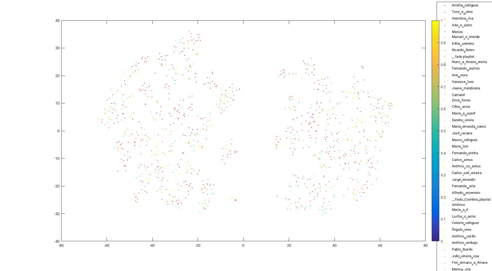
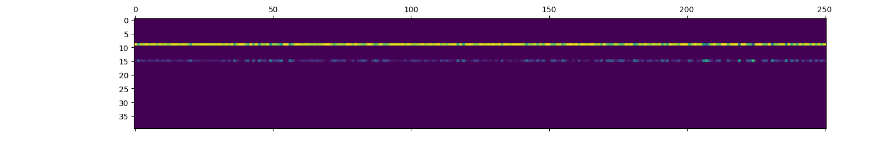

import pickle
import os
from os import listdir
from os.path import isfile, join
import numpy as np
from sklearn.cluster import KMeans
from sklearn.cluster import MiniBatchKMeans
import time
import pandas as pd
from sklearn import preprocessing
from IPython.display import Image
from IPython.core.display import HTML
#!pip install memory_profiler
#%load_ext memory_profiler
No início do projecto contava com um dataset com 1099 ficheiros audio de fado extraídos do youtube em formato .wav bem como um conjunto de 3 tipos de features já produzidas pelo Dorin para cada uma das músicas. Para explorar, visualizei os dados com tsne 2D e 3D. Também limpei o ficheiro das labels para incluir apenas ID - Nome de Artista - Nome de canção. Havia também ficheiros muito grandes (álbuns inteiros) que removi do dataset.

Imagem 1: TSNE às médias e variâncias das features Chroma de cada faixa de música. Os pontos estão coloridos por artista. O tsne não revela nenhum tipo de estrutura para além de dois grandes clusters.
A ideia inicial era aplicar uma implementação de gaussian LDA - no mirtools - a estas features contínuas para explorar possíveis tópicos que se apresentassem. Nesta fase inicial estava a escrever scripts de Bash e pequenos programas em C++ para tratar os dados, fazer visualizações, e transformações necessárias, que - em retrospectiva - consumiu muito tempo.

Imagem 2: Coeficientes dos tópicos em cada faixa
y: tópico - x: faixa
Como é evidente, os resultados foram anómalos e foi passado bastante tempo a rever scripts, aprender mais sobre e voltar a gerar as features em MFCC e Chroma.
def invlogamplitude(S):
"""librosa.logamplitude is actually 10_log10, so invert that."""
return 10.0**(S/10.0)
# retorna nome de wavs em directório
def getWavNames(inputDir):
wavFileNames = [join(inputDir, f) for f in listdir(inputDir) if isfile(join(inputDir, f)) and f[-3:]=="wav"]
#usableIDs = [int(file[-8:-4]) for file in wavFileNames]
return wavFileNames
#n_mfcc: número de coeficientes desejados
#nfft: comprimento para a fft, normalmente é a potência de 2 seguinte ao comprimento do maior sinal
nfft = 256
def makeMFCC(inputDir, outputDir, n_mfcc=20):
wavNames = getWavNames(inputDir)
for filename in wavNames:
# load
y, sr = librosa.load(filename)
# calculate mfcc
mfccs = librosa.feature.mfcc(y, sr=sr, n_mfcc=n_mfcc)
#mfccName = filename[-8:-4] + "_mfcc.csv"
mfccName = os.path.basename(filename)[:-4] + "_mfcc.csv"
saveDir = outputDir + mfccName
mfccs = pd.DataFrame(mfccs.T)
d.to_csv(saveDir)
print(filename + " " + str(mfccs.shape))
def makeChroma(inputDir, outputDir, nfft = 256):
wavNames = getWavNames(inputDir)
for filename in wavNames:
#load
y, sr = librosa.load(filename)
#calculate chroma features
chroma = librosa.feature.chroma_stft(y=y, sr=sr, n_fft = nfft, hop_length = int(nfft/2))
chromaName = os.path.basename(filename)[:-4] + "_chroma.csv"
saveDir = outputDir + chromaName
chroma = pd.DataFrame(chroma.T)
chroma.to_csv(saveDir)
print(filename + " " + str(chroma.shape))
# Também consegui reconstruir sinal a partir das mfccs, mas o código não está a funcionar de momento.
import plotly
import plotly.offline as py
plotly.offline.init_notebook_mode(connected=True)
import plotly.graph_objs as go
import plotly.figure_factory as ff
import colorlover as cl
pd.options.display.max_columns = 50
theta_glda_mirtools = pd.read_csv("/afs/l2f/home/frsc/Documents/ProjectosINESC/Fado/Full Report/Resources/phase1/Results/theta_gLDA_MFCC_mirtools.csv" ,sep=" ", header=None)
theta_glda_mirtools = theta_glda_mirtools.T
def tten(x):
return int(x*9)
#theta samples x n_topics
def plotTheta(theta, num_songs):
colors = cl.scales['9']['seq']['Reds']
t = theta
t['index_col'] = t.index
t = t[t.columns.tolist()[-1:] + t.columns.tolist()[:-1]]
col_n = len(t.columns)
row_n = len(t.index)
t_cols = [t[r].apply(tten)[:num_songs] for r in t.columns]
t_cols_color = t_cols
t_cols_color[0] = t_cols_color[1]
trace0 = go.Table(
header = dict(
values = list(range(col_n)),
line = dict(color = 'white'),
fill = dict(color = 'white'),
align = 'center',
font = dict(color = 'black', size = 12)
),
cells = dict(
values = t_cols,
line = dict(color = [np.array(colors)[np.array(c)] for c in t_cols_color]),
fill = dict(color = [np.array(colors)[np.array(c)] for c in t_cols_color]),
align = 'center',
font = dict(color = 'white', size = 12)
))
data = [trace0]
py.iplot(data, filename = "cell variable color")
plotTheta(theta_glda_mirtools,theta_glda_mirtools.shape[1])
Figura 3: Valores são arredondamentos a inteiros para lhes poder atribuir cores numa tabela do plotly.
theta_glda_mirtools.describe()
| 0 | 1 | 2 | 3 | 4 | 5 | 6 | 7 | 8 | 9 | 10 | 11 | 12 | 13 | 14 | 15 | 16 | 17 | 18 | 19 | 20 | 21 | 22 | 23 | 24 | 25 | 26 | 27 | 28 | 29 | 30 | 31 | 32 | 33 | 34 | 35 | 36 | 37 | 38 | 39 | index_col | |
|---|---|---|---|---|---|---|---|---|---|---|---|---|---|---|---|---|---|---|---|---|---|---|---|---|---|---|---|---|---|---|---|---|---|---|---|---|---|---|---|---|---|
| count | 7.410000e+02 | 7.410000e+02 | 7.410000e+02 | 7.410000e+02 | 7.410000e+02 | 7.410000e+02 | 7.410000e+02 | 7.410000e+02 | 7.410000e+02 | 7.410000e+02 | 7.410000e+02 | 7.410000e+02 | 7.410000e+02 | 7.410000e+02 | 7.410000e+02 | 7.410000e+02 | 7.410000e+02 | 7.410000e+02 | 7.410000e+02 | 7.410000e+02 | 7.410000e+02 | 741.000000 | 7.410000e+02 | 7.410000e+02 | 7.410000e+02 | 7.410000e+02 | 7.410000e+02 | 7.410000e+02 | 7.410000e+02 | 7.410000e+02 | 7.410000e+02 | 7.410000e+02 | 7.410000e+02 | 7.410000e+02 | 7.410000e+02 | 7.410000e+02 | 7.410000e+02 | 7.410000e+02 | 7.410000e+02 | 7.410000e+02 | 741.000000 |
| mean | 3.131209e-06 | 3.131209e-06 | 3.131209e-06 | 3.131209e-06 | 3.131209e-06 | 3.131209e-06 | 3.131209e-06 | 3.131209e-06 | 3.131209e-06 | 3.131209e-06 | 3.131209e-06 | 3.131209e-06 | 3.131209e-06 | 3.131209e-06 | 3.131209e-06 | 6.315357e-03 | 3.131209e-06 | 3.131209e-06 | 3.131209e-06 | 3.131209e-06 | 3.131209e-06 | 0.993555 | 3.131209e-06 | 3.131209e-06 | 3.131209e-06 | 3.131209e-06 | 3.131209e-06 | 3.131209e-06 | 3.131209e-06 | 3.131209e-06 | 3.131209e-06 | 3.131209e-06 | 3.131209e-06 | 3.131209e-06 | 3.131209e-06 | 3.131209e-06 | 3.131209e-06 | 3.131209e-06 | 1.355196e-05 | 3.131209e-06 | 370.000000 |
| std | 1.148827e-06 | 1.148827e-06 | 1.148827e-06 | 1.148827e-06 | 1.148827e-06 | 1.148827e-06 | 1.148827e-06 | 1.148827e-06 | 1.148827e-06 | 1.148827e-06 | 1.148827e-06 | 1.148827e-06 | 1.148827e-06 | 1.148827e-06 | 1.148827e-06 | 3.018236e-02 | 1.148827e-06 | 1.148827e-06 | 1.148827e-06 | 1.148827e-06 | 1.148827e-06 | 0.030208 | 1.148827e-06 | 1.148827e-06 | 1.148827e-06 | 1.148827e-06 | 1.148827e-06 | 1.148827e-06 | 1.148827e-06 | 1.148827e-06 | 1.148827e-06 | 1.148827e-06 | 1.148827e-06 | 1.148827e-06 | 1.148827e-06 | 1.148827e-06 | 1.148827e-06 | 1.148827e-06 | 1.648472e-04 | 1.148827e-06 | 214.052564 |
| min | 8.933996e-07 | 8.933996e-07 | 8.933996e-07 | 8.933996e-07 | 8.933996e-07 | 8.933996e-07 | 8.933996e-07 | 8.933996e-07 | 8.933996e-07 | 8.933996e-07 | 8.933996e-07 | 8.933996e-07 | 8.933996e-07 | 8.933996e-07 | 8.933996e-07 | 8.933996e-07 | 8.933996e-07 | 8.933996e-07 | 8.933996e-07 | 8.933996e-07 | 8.933996e-07 | 0.468923 | 8.933996e-07 | 8.933996e-07 | 8.933996e-07 | 8.933996e-07 | 8.933996e-07 | 8.933996e-07 | 8.933996e-07 | 8.933996e-07 | 8.933996e-07 | 8.933996e-07 | 8.933996e-07 | 8.933996e-07 | 8.933996e-07 | 8.933996e-07 | 8.933996e-07 | 8.933996e-07 | 8.933996e-07 | 8.933996e-07 | 0.000000 |
| 25% | 2.466213e-06 | 2.466213e-06 | 2.466213e-06 | 2.466213e-06 | 2.466213e-06 | 2.466213e-06 | 2.466213e-06 | 2.466213e-06 | 2.466213e-06 | 2.466213e-06 | 2.466213e-06 | 2.466213e-06 | 2.466213e-06 | 2.466213e-06 | 2.466213e-06 | 2.534469e-06 | 2.466213e-06 | 2.466213e-06 | 2.466213e-06 | 2.466213e-06 | 2.466213e-06 | 0.999839 | 2.466213e-06 | 2.466213e-06 | 2.466213e-06 | 2.466213e-06 | 2.466213e-06 | 2.466213e-06 | 2.466213e-06 | 2.466213e-06 | 2.466213e-06 | 2.466213e-06 | 2.466213e-06 | 2.466213e-06 | 2.466213e-06 | 2.466213e-06 | 2.466213e-06 | 2.466213e-06 | 2.473044e-06 | 2.466213e-06 | 185.000000 |
| 50% | 3.001921e-06 | 3.001921e-06 | 3.001921e-06 | 3.001921e-06 | 3.001921e-06 | 3.001921e-06 | 3.001921e-06 | 3.001921e-06 | 3.001921e-06 | 3.001921e-06 | 3.001921e-06 | 3.001921e-06 | 3.001921e-06 | 3.001921e-06 | 3.001921e-06 | 3.152585e-06 | 3.001921e-06 | 3.001921e-06 | 3.001921e-06 | 3.001921e-06 | 3.001921e-06 | 0.999877 | 3.001921e-06 | 3.001921e-06 | 3.001921e-06 | 3.001921e-06 | 3.001921e-06 | 3.001921e-06 | 3.001921e-06 | 3.001921e-06 | 3.001921e-06 | 3.001921e-06 | 3.001921e-06 | 3.001921e-06 | 3.001921e-06 | 3.001921e-06 | 3.001921e-06 | 3.001921e-06 | 3.006253e-06 | 3.001921e-06 | 370.000000 |
| 75% | 3.647505e-06 | 3.647505e-06 | 3.647505e-06 | 3.647505e-06 | 3.647505e-06 | 3.647505e-06 | 3.647505e-06 | 3.647505e-06 | 3.647505e-06 | 3.647505e-06 | 3.647505e-06 | 3.647505e-06 | 3.647505e-06 | 3.647505e-06 | 3.647505e-06 | 4.124051e-06 | 3.647505e-06 | 3.647505e-06 | 3.647505e-06 | 3.647505e-06 | 3.647505e-06 | 0.999901 | 3.647505e-06 | 3.647505e-06 | 3.647505e-06 | 3.647505e-06 | 3.647505e-06 | 3.647505e-06 | 3.647505e-06 | 3.647505e-06 | 3.647505e-06 | 3.647505e-06 | 3.647505e-06 | 3.647505e-06 | 3.647505e-06 | 3.647505e-06 | 3.647505e-06 | 3.647505e-06 | 3.664614e-06 | 3.647505e-06 | 555.000000 |
| max | 1.931994e-05 | 1.931994e-05 | 1.931994e-05 | 1.931994e-05 | 1.931994e-05 | 1.931994e-05 | 1.931994e-05 | 1.931994e-05 | 1.931994e-05 | 1.931994e-05 | 1.931994e-05 | 1.931994e-05 | 1.931994e-05 | 1.931994e-05 | 1.931994e-05 | 5.310067e-01 | 1.931994e-05 | 1.931994e-05 | 1.931994e-05 | 1.931994e-05 | 1.931994e-05 | 0.999965 | 1.931994e-05 | 1.931994e-05 | 1.931994e-05 | 1.931994e-05 | 1.931994e-05 | 1.931994e-05 | 1.931994e-05 | 1.931994e-05 | 1.931994e-05 | 1.931994e-05 | 1.931994e-05 | 1.931994e-05 | 1.931994e-05 | 1.931994e-05 | 1.931994e-05 | 1.931994e-05 | 3.730113e-03 | 1.931994e-05 | 740.000000 |
Como podemos observar, apenas os tópicos 15, 21, e 38 tomam valores com ordem de magnitude superior a -5 para alguma canção. Isto sugere mau funcionamento do gLDA já que a integridade dos dados foi assegurada pela sua geração de raiz.
Entretanto comecei a usar python, aprendi numpy, pandas, matplotlib, e sklearn para acelerar o fluxo de trabalho. O refazer das features não ajudou.
Sem solução em vista, escolhi discretizar as frames dos mfccs com kmeans para lhes aplicar um LDA discreto. Isto funcionou melhor, com resultados de aspecto natural, mas sem clusters óbvios. Antecipa-se que os resultados encontrados reflictam regularidades na qualidade de gravação mais do que aspectos musicais.
wavDir = "/ffs/tmp/frsc/fado/fado_init/wav/usable"
mfccDir = "/ffs/tmp/frsc/fado/fado_init/features3/mfcc/"
chromaDir = "/ffs/tmp/frsc/fado/fado_init/features2/chroma/"
labelDir = "/afs/l2f/home/frsc/Documents/ProjectosINESC/Fado/Full Report/Resources/phase1/labels.txt"
N = 500
#Directórios para teste com apenas 2 ficheiros de som
#wavDir = "/afs/l2f/home/frsc/Documents/ProjectosINESC/Fado/Full Report/Resources/isft/"
#mfccDir = "/afs/l2f/home/frsc/Documents/ProjectosINESC/Fado/Full Report/Resources/isft/"
#chromaDir = "/afs/l2f/home/frsc/Documents/ProjectosINESC/Fado/Full Report/Resources/isft/"
#labelDir = "/afs/l2f/home/frsc/Documents/ProjectosINESC/Fado/Full Report/Resources/isft/label_example.txt"
featureDir=mfccDir
#featureTypeName: nome do tipo de feature, lowercase
#idFromName: deduzir ID pelo nome qd tem formato "0001_featuretype.csv"
def buildSongsDF(featureDir, labelDir, featureTypeName, n_songs = 0, idFromName=False):
# Load Labels
labels_df = pd.read_csv(labelDir, delimiter = ' - ', header=0, index_col = 0, dtype=str)
# Make filenames
desiredSuffix = featureTypeName+".csv"
files = [join(featureDir, f) for f in listdir(featureDir) if isfile(join(featureDir, f)) and f.endswith(desiredSuffix)]
# Get IDs of songs to be loaded
song_ids = [(os.path.basename(file)[:-len(desiredSuffix)-1]) for file in files]
if n_songs == 0:
song_n = len(song_ids)
song_n = n_songs
# load songs
song_list = [None] * song_n
for x in range(song_n):
song_list[x] = pd.read_csv(files[x], header=None, index_col=None)
song_ids = song_ids[:song_n]
song_dict = dict(zip(song_ids, song_list))
songs_df = pd.concat(song_dict)
return song_ids, songs_df
song_ids, songs_df = buildSongsDF(mfccDir, labelDir, n_songs=N, featureTypeName="mfcc")
/afs/l2f.inesc-id.pt/home/frsc/virtualenv/lib/python3.4/site-packages/ipykernel_launcher.py:5: ParserWarning: Falling back to the 'python' engine because the 'c' engine does not support regex separators (separators > 1 char and different from '\s+' are interpreted as regex); you can avoid this warning by specifying engine='python'.
def discretizeContinuousFeatures(featureDir, labelDir, n_songs=0, cluster_n=100, featureTypeName="mfcc"):
#KMeans
song_ids, songs_df = buildSongsDF(featureDir, labelDir, n_songs = n_songs, featureTypeName = featureTypeName)
songs_df_scaled = pd.DataFrame(preprocessing.scale(songs_df))
song_n = len(song_ids)
X_NEW = MiniBatchKMeans(n_clusters=cluster_n, random_state=0).fit_predict(songs_df_scaled)
x_df = pd.DataFrame(X_NEW)
x_df.groupby(0).size()
# Reconstruir Canções com isto
song_lens = [len(songs_df.loc[x]) for x in song_ids]
discrete_songs = [None]*song_n
high = 0
low = 0
for i in range(song_n):
high += song_lens[i]
discrete_songs[i] = X_NEW[low:high]
low = high
kmeansDir = featureDir + "meta/fadoKmeans.csv"
x_df.to_csv(path_or_buf=kmeansDir, index=False)
print("Document lengths:\n")
for i in range(song_n):
print("Song {0}: {1}".format(song_ids[i],len(discrete_songs[i])))
return x_df, discrete_songs
x_df, discrete_songs = discretizeContinuousFeatures(mfccDir, labelDir, n_songs = N, featureTypeName="mfcc")
/afs/l2f.inesc-id.pt/home/frsc/virtualenv/lib/python3.4/site-packages/ipykernel_launcher.py:5: ParserWarning: Falling back to the 'python' engine because the 'c' engine does not support regex separators (separators > 1 char and different from '\s+' are interpreted as regex); you can avoid this warning by specifying engine='python'.
Document lengths: Song 0001: 5430 Song 0054: 6794 Song 0055: 13523 Song 0057: 6766 Song 0058: 8043 Song 0059: 9057 Song 0060: 7627 Song 0061: 8810 Song 0062: 6993 Song 0063: 6787 Song 0064: 6498 Song 0065: 6215 Song 0066: 6857 Song 0067: 7623 Song 0068: 6206 Song 0069: 7363 Song 0070: 7663 Song 0071: 6379 Song 0073: 11147 Song 0075: 9885 Song 0076: 9142 Song 0077: 6673 Song 0078: 11707 Song 0079: 11051 Song 0080: 8835 Song 0081: 7400 Song 0082: 12859 Song 0083: 10048 Song 0084: 11111 Song 0085: 8312 Song 0086: 8544 Song 0087: 12857 Song 0088: 8021 Song 0089: 5781 Song 0090: 6599 Song 0091: 8237 Song 0094: 8268 Song 0095: 7197 Song 0096: 14078 Song 0097: 6978 Song 0098: 6281 Song 0099: 9863 Song 0100: 7812 Song 0102: 6169 Song 0104: 6905 Song 0105: 7499 Song 0106: 8535 Song 0107: 9233 Song 0109: 8177 Song 0110: 6327 Song 0111: 6739 Song 0112: 5518 Song 0113: 6359 Song 0114: 6743 Song 0115: 7470 Song 0116: 6552 Song 0117: 8410 Song 0118: 7959 Song 0119: 10699 Song 0121: 8748 Song 0122: 12872 Song 0123: 7077 Song 0124: 7905 Song 0125: 15395 Song 0126: 10014 Song 0127: 9423 Song 0128: 6628 Song 0130: 5623 Song 0131: 10167 Song 0132: 9043 Song 0133: 7205 Song 0134: 8659 Song 0135: 5699 Song 0136: 5818 Song 0137: 7073 Song 0138: 5873 Song 0139: 10731 Song 0140: 9019 Song 0141: 9222 Song 0142: 8875 Song 0143: 9265 Song 0144: 9172 Song 0145: 6673 Song 0146: 13905 Song 0147: 13185 Song 0148: 9487 Song 0149: 7541 Song 0150: 10241 Song 0152: 7327 Song 0153: 9759 Song 0154: 9341 Song 0157: 9487 Song 0158: 9767 Song 0159: 7171 Song 0160: 6841 Song 0161: 5663 Song 0162: 6289 Song 0163: 6839 Song 0164: 8709 Song 0165: 6044 Song 0166: 5581 Song 0167: 12927 Song 0168: 12899 Song 0169: 5598 Song 0170: 5265 Song 0171: 6294 Song 0172: 18066 Song 0174: 9165 Song 0175: 9144 Song 0176: 5699 Song 0177: 7690 Song 0179: 11190 Song 0180: 5980 Song 0181: 12278 Song 0182: 9245 Song 0184: 13661 Song 0186: 6544 Song 0188: 8230 Song 0189: 10933 Song 0190: 13107 Song 0191: 13202 Song 0192: 14308 Song 0194: 12470 Song 0195: 7218 Song 0196: 7929 Song 0197: 9434 Song 0198: 7236 Song 0199: 6289 Song 0200: 10132 Song 0201: 7509 Song 0202: 10399 Song 0203: 6625 Song 0204: 11014 Song 0205: 11470 Song 0206: 7544 Song 0207: 9904 Song 0208: 15068 Song 0209: 18877 Song 0210: 10511 Song 0211: 7015 Song 0212: 3796 Song 0213: 13513 Song 0214: 10418 Song 0215: 9872 Song 0216: 10554 Song 0217: 8096 Song 0219: 10108 Song 0220: 9712 Song 0221: 10564 Song 0222: 13176 Song 0224: 10172 Song 0225: 12182 Song 0226: 10850 Song 0227: 9893 Song 0229: 8113 Song 0230: 8368 Song 0231: 7567 Song 0232: 3662 Song 0233: 9873 Song 0234: 12071 Song 0235: 17118 Song 0236: 14687 Song 0237: 13183 Song 0238: 10665 Song 0239: 8173 Song 0240: 11708 Song 0241: 7938 Song 0242: 6906 Song 0243: 9175 Song 0244: 11102 Song 0245: 18024 Song 0246: 9091 Song 0247: 8912 Song 0248: 7086 Song 0249: 14193 Song 0250: 6527 Song 0251: 11471 Song 0252: 9323 Song 0253: 10364 Song 0254: 8649 Song 0255: 9459 Song 0256: 8561 Song 0258: 7097 Song 0260: 20564 Song 0261: 4439 Song 0262: 6763 Song 0263: 10765 Song 0264: 10052 Song 0265: 9316 Song 0266: 14049 Song 0267: 10151 Song 0268: 10397 Song 0269: 8989 Song 0271: 10605 Song 0273: 11357 Song 0274: 10984 Song 0275: 6928 Song 0276: 11609 Song 0277: 10769 Song 0280: 7498 Song 0497: 8153 Song 0498: 9500 Song 0499: 5861 Song 0500: 15534 Song 0502: 6461 Song 0503: 6035 Song 0504: 13203 Song 0505: 13185 Song 0506: 9731 Song 0507: 7719 Song 0508: 17029 Song 0509: 4941 Song 0510: 10999 Song 0511: 3443 Song 0512: 11418 Song 0513: 7145 Song 0514: 14617 Song 0515: 5464 Song 0517: 9495 Song 0518: 5571 Song 0519: 7269 Song 0520: 9484 Song 0521: 8353 Song 0522: 7141 Song 0523: 10665 Song 0524: 7785 Song 0525: 10511 Song 0526: 4787 Song 0527: 14149 Song 0528: 7737 Song 0529: 6367 Song 0530: 7663 Song 0531: 11805 Song 0532: 7653 Song 0533: 5028 Song 0534: 7825 Song 0535: 5891 Song 0536: 11891 Song 0537: 9278 Song 0538: 8020 Song 0539: 7534 Song 0540: 5160 Song 0541: 7210 Song 0542: 7425 Song 0543: 11589 Song 0544: 10915 Song 0546: 10435 Song 0547: 8948 Song 0548: 8327 Song 0549: 8290 Song 0550: 9691 Song 0551: 12310 Song 0552: 7096 Song 0553: 8131 Song 0554: 9066 Song 0555: 9845 Song 0556: 8809 Song 0557: 14772 Song 0558: 8076 Song 0559: 8657 Song 0560: 12687 Song 0561: 8467 Song 0562: 10790 Song 0563: 11935 Song 0564: 9908 Song 0565: 4157 Song 0566: 10465 Song 0567: 13933 Song 0568: 6199 Song 0569: 7582 Song 0570: 10360 Song 0572: 9215 Song 0573: 12722 Song 0574: 10038 Song 0575: 6731 Song 0576: 8108 Song 0577: 6843 Song 0578: 6283 Song 0580: 7915 Song 0581: 5673 Song 0582: 7821 Song 0583: 7880 Song 0584: 7421 Song 0585: 9221 Song 0586: 8757 Song 0587: 9871 Song 0588: 7325 Song 0589: 7879 Song 0591: 11635 Song 0592: 10167 Song 0593: 5728 Song 0594: 9145 Song 0595: 3795 Song 0596: 5420 Song 0597: 16971 Song 0598: 9244 Song 0599: 14471 Song 0600: 18162 Song 0601: 21910 Song 0604: 12417 Song 0605: 5469 Song 0606: 13759 Song 0607: 14749 Song 0608: 9926 Song 0609: 11365 Song 0610: 8897 Song 0611: 6130 Song 0612: 9555 Song 0613: 9078 Song 0614: 8884 Song 0615: 8499 Song 0616: 9261 Song 0617: 11375 Song 0618: 12206 Song 0619: 9060 Song 0621: 7795 Song 0622: 8613 Song 0623: 10050 Song 0624: 5792 Song 0625: 10243 Song 0626: 11471 Song 0627: 5885 Song 0628: 6795 Song 0629: 6701 Song 0630: 6795 Song 0631: 9167 Song 0632: 7591 Song 0633: 9681 Song 0634: 6885 Song 0635: 6599 Song 0636: 7002 Song 0637: 6421 Song 0638: 9603 Song 0639: 8787 Song 0640: 7607 Song 0641: 18453 Song 0642: 4567 Song 0643: 9457 Song 0644: 5043 Song 0645: 6562 Song 0646: 5905 Song 0647: 6728 Song 0648: 4265 Song 0649: 6980 Song 0651: 3238 Song 0652: 10384 Song 0653: 11374 Song 0654: 8975 Song 0656: 12534 Song 0657: 12242 Song 0659: 13185 Song 0660: 9644 Song 0661: 6119 Song 0662: 8821 Song 0663: 6963 Song 0664: 6061 Song 0665: 11725 Song 0666: 7979 Song 0667: 5763 Song 0668: 5507 Song 0669: 15857 Song 0670: 9004 Song 0671: 17671 Song 0672: 4714 Song 0673: 8893 Song 0674: 9293 Song 0675: 8561 Song 0676: 7247 Song 0677: 5631 Song 0678: 10667 Song 0679: 7724 Song 0680: 20414 Song 0681: 5219 Song 0682: 7731 Song 0683: 7883 Song 0684: 8228 Song 0685: 11582 Song 0686: 7879 Song 0687: 7648 Song 0688: 8186 Song 0689: 8303 Song 0690: 12553 Song 0692: 10017 Song 0693: 4530 Song 0694: 10187 Song 0695: 8749 Song 0696: 11421 Song 0697: 8384 Song 0698: 8065 Song 0699: 8220 Song 0700: 5603 Song 0701: 7919 Song 0702: 10136 Song 0703: 9841 Song 0704: 6502 Song 0706: 4225 Song 0712: 6551 Song 0713: 9601 Song 0714: 5837 Song 0716: 5792 Song 0717: 6525 Song 0718: 8622 Song 0719: 6842 Song 0722: 7541 Song 0724: 7637 Song 0726: 15761 Song 0728: 7775 Song 0732: 6665 Song 0733: 9183 Song 0736: 6427 Song 0737: 7257 Song 0739: 9529 Song 0740: 6634 Song 0741: 8177 Song 0742: 7497 Song 0744: 7937 Song 0748: 5361 Song 0751: 7840 Song 0752: 7064 Song 0753: 10825 Song 0754: 1293 Song 0755: 7625 Song 0759: 5681 Song 0760: 4197 Song 0763: 9664 Song 0766: 6483 Song 0767: 8329 Song 0769: 4653 Song 0770: 7997 Song 0772: 3154 Song 0773: 13709 Song 0774: 11692 Song 0775: 9628 Song 0776: 8259 Song 0778: 7829 Song 0781: 13266 Song 0782: 11018 Song 0783: 8126 Song 0784: 10323 Song 0786: 9535 Song 0787: 17534 Song 0788: 9705 Song 0790: 6011 Song 0792: 10984 Song 0793: 6188 Song 0794: 9261 Song 0795: 10315 Song 0796: 3147 Song 0797: 6489 Song 0799: 16997 Song 0800: 5249 Song 0801: 5686 Song 0802: 6505 Song 0803: 6204 Song 0804: 6928 Song 0805: 6741 Song 0806: 8618 Song 0808: 5470 Song 0809: 9132 Song 0810: 9273 Song 0811: 9293 Song 0812: 7484 Song 0813: 7153 Song 0814: 7363 Song 0815: 10549 Song 0816: 10251 Song 0817: 9591 Song 0818: 8865 Song 0819: 12845 Song 0820: 6976 Song 0821: 9865 Song 0822: 4931 Song 0823: 7595 Song 0824: 9179 Song 0825: 5939 Song 0826: 5387 Song 0827: 9065 Song 0828: 7513 Song 0829: 10516 Song 0830: 8443 Song 0831: 7279 Song 0832: 12192 Song 0833: 6519 Song 0834: 7446 Song 0835: 6033 Song 0836: 4636 Song 0837: 19504 Song 0838: 8073 Song 0839: 19276 Song 0840: 8893 Song 0841: 9544 Song 0842: 8844 Song 0843: 10199 Song 0844: 10079 Song 0845: 9887 Song 0846: 9322 Song 0847: 7167 Song 0848: 6328 Song 0849: 5516 Song 0850: 6615
#Frequências de cada "palavra"
x_df[0].value_counts()
24 96205
48 88591
19 88189
35 76366
89 74882
2 74149
65 72416
45 71858
79 71769
5 71682
21 71646
13 70372
40 69576
36 69069
15 67124
17 66212
59 65080
53 64741
87 63338
26 63027
78 61963
8 60807
46 60695
37 60284
50 59072
63 58873
1 58723
54 58097
29 57749
92 57003
...
68 32633
91 32529
56 31938
55 31690
51 31228
32 30615
30 30604
75 29775
7 29466
73 29041
16 27884
96 27754
41 26396
72 25327
44 24578
95 24110
85 23954
20 23810
28 23309
81 22470
97 21507
71 21328
12 21168
90 20319
42 19402
70 17500
74 17162
84 14178
93 13184
62 10938
Name: 0, Length: 100, dtype: int64
# Fazer document-word matrix
from sklearn.feature_extraction import DictVectorizer
from collections import Counter, OrderedDict
def makeDocWordMatrix(mfccDir, discrete_songs):
vectorizer = DictVectorizer()
# discover corpus and vectorize file word frequencies in a single pass
dwm = vectorizer.fit_transform(Counter(f) for f in (discrete_songs))
#dwm = pd.DataFrame(dwm)
#dwm.to_csv(mfccDir+"meta/DWM.csv")
return dwm
dwm = makeDocWordMatrix(mfccDir, discrete_songs)
from sklearn.decomposition import LatentDirichletAllocation
def runLDA(dwm, outputPath):
lda = LatentDirichletAllocation(n_components=40, random_state=0, evaluate_every=10)
theta = lda.fit_transform(dwm)
theta = pd.DataFrame(theta)
theta.describe()
theta.to_csv(outputPath)
return theta
theta = runLDA(dwm, mfccDir+"meta/LDAtheta.csv")
theta.to_csv("test_theta.csv")
/afs/l2f.inesc-id.pt/home/frsc/virtualenv/lib/python3.4/site-packages/sklearn/decomposition/online_lda.py:536: DeprecationWarning: The default value for 'learning_method' will be changed from 'online' to 'batch' in the release 0.20. This warning was introduced in 0.18.
theta.describe()
| 0 | 1 | 2 | 3 | 4 | 5 | 6 | 7 | 8 | 9 | 10 | 11 | 12 | 13 | 14 | 15 | 16 | 17 | 18 | 19 | 20 | 21 | 22 | 23 | 24 | 25 | 26 | 27 | 28 | 29 | 30 | 31 | 32 | 33 | 34 | 35 | 36 | 37 | 38 | 39 | |
|---|---|---|---|---|---|---|---|---|---|---|---|---|---|---|---|---|---|---|---|---|---|---|---|---|---|---|---|---|---|---|---|---|---|---|---|---|---|---|---|---|
| count | 500.000000 | 500.000000 | 500.000000 | 500.000000 | 500.000000 | 500.000000 | 500.000000 | 500.000000 | 500.000000 | 500.000000 | 500.000000 | 500.000000 | 500.000000 | 500.000000 | 500.000000 | 500.000000 | 500.000000 | 500.000000 | 500.000000 | 500.000000 | 500.000000 | 500.000000 | 500.000000 | 500.000000 | 500.000000 | 500.000000 | 500.000000 | 500.000000 | 500.000000 | 500.000000 | 500.000000 | 500.000000 | 500.000000 | 500.000000 | 500.000000 | 500.000000 | 500.000000 | 500.000000 | 500.000000 | 500.000000 |
| mean | 0.021013 | 0.022656 | 0.029330 | 0.018933 | 0.027524 | 0.044848 | 0.022005 | 0.031310 | 0.026550 | 0.041791 | 0.030945 | 0.021046 | 0.012232 | 0.022357 | 0.005288 | 0.021500 | 0.031572 | 0.038617 | 0.039137 | 0.015771 | 0.035373 | 0.014338 | 0.015555 | 0.011588 | 0.026125 | 0.028856 | 0.042511 | 0.019233 | 0.020896 | 0.042111 | 0.041905 | 0.016689 | 0.007890 | 0.026649 | 0.020543 | 0.004911 | 0.029634 | 0.017525 | 0.020149 | 0.033093 |
| std | 0.072465 | 0.049883 | 0.067984 | 0.039827 | 0.081329 | 0.125234 | 0.060124 | 0.087853 | 0.076646 | 0.086517 | 0.061535 | 0.069851 | 0.050615 | 0.062704 | 0.061831 | 0.061638 | 0.080131 | 0.079313 | 0.101592 | 0.051604 | 0.092304 | 0.068574 | 0.058450 | 0.053222 | 0.114214 | 0.096470 | 0.111056 | 0.058637 | 0.075134 | 0.097062 | 0.076697 | 0.062691 | 0.071965 | 0.116087 | 0.077525 | 0.064441 | 0.085473 | 0.051443 | 0.047633 | 0.093183 |
| min | 0.000001 | 0.000001 | 0.000001 | 0.000001 | 0.000001 | 0.000001 | 0.000001 | 0.000001 | 0.000001 | 0.000001 | 0.000001 | 0.000001 | 0.000001 | 0.000001 | 0.000001 | 0.000001 | 0.000001 | 0.000001 | 0.000001 | 0.000001 | 0.000001 | 0.000001 | 0.000001 | 0.000001 | 0.000001 | 0.000001 | 0.000001 | 0.000001 | 0.000001 | 0.000001 | 0.000001 | 0.000001 | 0.000001 | 0.000001 | 0.000001 | 0.000001 | 0.000001 | 0.000001 | 0.000001 | 0.000001 |
| 25% | 0.000003 | 0.000003 | 0.000003 | 0.000003 | 0.000003 | 0.000003 | 0.000003 | 0.000003 | 0.000003 | 0.000003 | 0.000003 | 0.000003 | 0.000003 | 0.000003 | 0.000003 | 0.000003 | 0.000003 | 0.000003 | 0.000003 | 0.000003 | 0.000003 | 0.000003 | 0.000003 | 0.000003 | 0.000003 | 0.000003 | 0.000003 | 0.000003 | 0.000003 | 0.000003 | 0.000003 | 0.000003 | 0.000003 | 0.000003 | 0.000003 | 0.000003 | 0.000003 | 0.000003 | 0.000003 | 0.000003 |
| 50% | 0.000003 | 0.004519 | 0.000004 | 0.000004 | 0.000004 | 0.000004 | 0.000004 | 0.000004 | 0.000004 | 0.000004 | 0.000004 | 0.000004 | 0.000003 | 0.000004 | 0.000003 | 0.000004 | 0.000005 | 0.000004 | 0.000004 | 0.000004 | 0.000004 | 0.000004 | 0.000003 | 0.000003 | 0.000004 | 0.000004 | 0.000004 | 0.000004 | 0.000004 | 0.000004 | 0.000004 | 0.000003 | 0.000003 | 0.000004 | 0.000003 | 0.000003 | 0.000003 | 0.000003 | 0.000003 | 0.000004 |
| 75% | 0.005651 | 0.023702 | 0.023099 | 0.020957 | 0.014044 | 0.014862 | 0.014850 | 0.014494 | 0.014333 | 0.041583 | 0.033966 | 0.013512 | 0.000005 | 0.008266 | 0.000236 | 0.005057 | 0.029827 | 0.038027 | 0.012638 | 0.006677 | 0.015411 | 0.004822 | 0.000005 | 0.000004 | 0.002913 | 0.011075 | 0.011262 | 0.006178 | 0.008624 | 0.015241 | 0.050362 | 0.000005 | 0.000005 | 0.005215 | 0.000005 | 0.000004 | 0.000041 | 0.003515 | 0.014821 | 0.013016 |
| max | 0.791284 | 0.419231 | 0.577191 | 0.448728 | 0.882645 | 0.936298 | 0.645935 | 0.761008 | 0.577330 | 0.727915 | 0.442754 | 0.933582 | 0.782582 | 0.767700 | 0.999926 | 0.585634 | 0.809149 | 0.494542 | 0.740457 | 0.590490 | 0.864668 | 0.892212 | 0.575900 | 0.551111 | 0.969596 | 0.992668 | 0.774450 | 0.624727 | 0.809278 | 0.551183 | 0.472041 | 0.710265 | 0.998516 | 0.999898 | 0.873202 | 0.999847 | 0.583346 | 0.560388 | 0.357433 | 0.677747 |
Esta matriz theta já parece mais natural! Procedamos à visualização
theta = pd.read_csv("test_theta.csv", header=0, index_col=0)
# Visualization
from os import listdir
from os.path import isfile, join
import numpy as np; np.random.seed(1)
from sklearn.manifold import TSNE
def decodeLabels(labelDir, labelMask=[None]):
with open(labelDir, 'r') as labels:
lines = labels.readlines()[1:]
i = 0
if all(x == None for x in labelMask):
song_n = len(lines)
labelMask = [x + 1 for x in range(song_n)]
else:
song_n = len(labelMask)
songNames = [None] * song_n
artistNames = [None] * song_n
ids = [None] * song_n
for a in labelMask:
x = a - 1
line = lines[x]
s = line.split('-')
ids[i] = a
songNames[i] = s[2]
artistNames[i] = s[1]
i += 1
return ids, songNames, artistNames
# Directório com labels id - artista - música
labelDir = "/afs/l2f/home/frsc/Documents/ProjectosINESC/Fado/Full Report/Resources/phase1/labels.txt"
labelMask = [int(x) for x in song_ids]
files = [join(featureDir, f) for f in listdir(featureDir) if isfile(join(featureDir, f))]
n_samples = len(files)
X_embedded = TSNE(n_components=2, perplexity=2.0).fit_transform(theta)
print(X_embedded.shape)
X_embedded2 = TSNE(n_components=2, perplexity=15.0).fit_transform(theta)
print(X_embedded.shape)
X_embedded3 = TSNE(n_components=2, perplexity=50.0).fit_transform(theta)
print(X_embedded.shape)
X_embedded4 = TSNE(n_components=2, perplexity=100.0).fit_transform(theta)
print(X_embedded.shape)
(500, 2) (500, 2) (500, 2) (500, 2)
# Top Thetas
topTheta = theta.idxmax(1)
c = topTheta
ids, songNames, artistNames = decodeLabels(labelDir, labelMask)
x1 = X_embedded[:,0]
y1 = X_embedded[:,1]
x2 = X_embedded2[:,0]
y2 = X_embedded2[:,1]
x3 = X_embedded3[:,0]
y3 = X_embedded3[:,1]
x4 = X_embedded4[:,0]
y4 = X_embedded4[:,1]
names = ["{} - [{}] {} - {}\n".format(c[i], ids[i], songNames[i][:-1], artistNames[i]) for i in range(N)]
name_dict = {
'top Topic': c,
'id': ids,
'song': songNames,
'artist': artistNames
}
ndf = pd.DataFrame(name_dict)
ndf
| artist | id | song | top Topic | |
|---|---|---|---|---|
| 0 | Amália Rodrigues | 1 | O Malmequer pequenino\n | 36 |
| 1 | Amália Rodrigues | 54 | Partindo Se (Lyrics)\n | 7 |
| 2 | Amália Rodrigues | 55 | fado portugal amalia\n | 15 |
| 3 | Amália Rodrigues | 57 | Malhão De Águeda\n | 24 |
| 4 | Amália Rodrigues | 58 | Acho Inúteis as Palavras (Lyrics _ texto)\n | 36 |
| 5 | Amália Rodrigues | 59 | Os teus olhos são dois círios\n | 31 |
| 6 | Amália Rodrigues | 60 | Madrugada de Alfama\n | 7 |
| 7 | Amália Rodrigues | 61 | 'ALFAMA'\n | 1 |
| 8 | Amália Rodrigues | 62 | Maria Lisboa\n | 7 |
| 9 | Amália Rodrigues | 63 | uma casa portuguesa\n | 9 |
| 10 | Amália Rodrigues | 64 | 'CASA DA MARIQUINHAS''\n | 38 |
| 11 | Amália Rodrigues | 65 | O NAMORICO DA RITA\n | 2 |
| 12 | Amália Rodrigues | 66 | Cheira a Lisboa\n | 30 |
| 13 | Amália Rodrigues | 67 | Lisboa Não Sejas Francesa\n | 30 |
| 14 | Amália Rodrigues | 68 | Casa da Mariquinhas (Vou dar de beber à dor)\n | 9 |
| 15 | Amália Rodrigues | 69 | Madrugada de Alfama (1961)\n | 24 |
| 16 | Amália Rodrigues | 70 | Havemos de ir a Viana\n | 0 |
| 17 | Amália Rodrigues | 71 | Oiça Lá Ó Senhor Vinho\n | 35 |
| 18 | Amália Rodrigues | 73 | 'Gaivota' Live\n | 10 |
| 19 | Amália Rodrigues | 75 | 'tudo isto é fado'\n | 7 |
| 20 | Amália Rodrigues | 76 | Estranha forma de vida (1965)\n | 28 |
| 21 | Amália Rodrigues | 77 | 'Canção Do Mar'\n | 10 |
| 22 | Amália Rodrigues | 78 | 'Povo Que Lavas No Rio'\n | 34 |
| 23 | Amália Rodrigues | 79 | Barco Negro\n | 37 |
| 24 | Amália Rodrigues | 80 | 'MEU AMOR, NEU AMOR'\n | 7 |
| 25 | Amália Rodrigues | 81 | Amor de mel, amor de fel\n | 15 |
| 26 | Amália Rodrigues | 82 | Maldição\n | 9 |
| 27 | Amália Rodrigues | 83 | Eu Queria Cantar te um Fado\n | 36 |
| 28 | Amália Rodrigues | 84 | Fado Primavera\n | 7 |
| 29 | Amália Rodrigues | 85 | Novo fado da severa ( rua do capelao)\n | 4 |
| ... | ... | ... | ... | ... |
| 470 | Fernando Maurício | 821 | Boa noite solidão\n | 5 |
| 471 | Fernando Maurício | 822 | 'Na Mouraria'\n | 9 |
| 472 | Fernando Maurício | 823 | Desgarradas\n | 9 |
| 473 | Fernando Maurício | 824 | Terra Irada (fado franklim )\n | 9 |
| 474 | Fernando Maurício | 825 | 'Loucuras de um homem só'\n | 26 |
| 475 | Fernando Maurício | 826 | Fado na Mouraria\n | 33 |
| 476 | José Coelho | 827 | 'Eu gosto daquela feia'\n | 30 |
| 477 | José Coelho | 828 | Pecados quem os não tem\n | 30 |
| 478 | Rodrigo | 829 | a ultima tourada real de salvaterra\n | 5 |
| 479 | Rodrigo | 830 | Velho Marinheiro\n | 30 |
| 480 | Rodrigo | 831 | cais do sodré\n | 20 |
| 481 | Rodrigo | 832 | Ardinita\n | 30 |
| 482 | Rodrigo | 833 | 'Recordações do Passado'\n | 27 |
| 483 | Vicente da Câmara | 834 | O rio que nos viu nascer\n | 26 |
| 484 | Vicente da Câmara | 835 | FADO DAS CALDAS\n | 25 |
| 485 | Vicente da Câmara | 836 | Moda das tranças pretas\n | 33 |
| 486 | João Braga e Amigos | 837 | 'Desgarrada de Fado'\n | 32 |
| 487 | João Braga | 838 | Rapsódia de Fados\n | 33 |
| 488 | João Braga e Maria da Fé e a brilhante nova g... | 839 | nome desconhecido\n | 39 |
| 489 | João Braga | 840 | 'Fado do Estudante'\n | 39 |
| 490 | João Braga | 841 | É tão bom ser pequenino\n | 33 |
| 491 | João Braga | 842 | Fado Menor\n | 39 |
| 492 | João Braga e Teresa Siqueira | 843 | Desgarrada\n | 10 |
| 493 | João Braga | 844 | Rapsódia\n | 33 |
| 494 | Lucília do Carmo | 845 | Ele Há de Ter o Castigo\n | 22 |
| 495 | Lucília do Carmo | 846 | Tudo isto é fado\n | 9 |
| 496 | Lucília do Carmo | 847 | Foi na travessa da palha\n | 4 |
| 497 | Lucília do Carmo | 848 | Lisboa casta princesa\n | 8 |
| 498 | Lucília do Carmo | 849 | Olhos Garotos\n | 22 |
| 499 | Lucília do Carmo | 850 | (maria madalena)\n | 30 |
500 rows × 4 columns
ndf[:4]
| artist | id | song | top Topic | |
|---|---|---|---|---|
| 0 | Amália Rodrigues | 1 | O Malmequer pequenino\n | 36 |
| 1 | Amália Rodrigues | 54 | Partindo Se (Lyrics)\n | 7 |
| 2 | Amália Rodrigues | 55 | fado portugal amalia\n | 15 |
| 3 | Amália Rodrigues | 57 | Malhão De Águeda\n | 24 |
import plotly.graph_objs as go
def plotTSNE(x,y,c,N):
data = [
go.Scatter(
x = x,
y = y,
text = names,
mode='markers',
hoverinfo = 'text',
marker = dict(
color = [int(x)/(N/5) for x in c],
colorscale='Viridis'
),
showlegend = False
)
]
py.iplot(data, filename = "add-hover-text")
plotTSNE(x1,y1,c,N)
plotTSNE(x2,y2,c,N)
plotTSNE(x3,y3,c,N)
plotTSNE(x4,y4,c,N)
Figura 4. tSNE bidimensional para as misturas de tópicos com perplexities de 2, 15, 50, 100
plotTSNE(x2,y2,c,N)
Figura 5. O tsne com clusters mais diferenciados parece ser o de perplexidade 15
theta.describe()
| 0 | 1 | 2 | 3 | 4 | 5 | 6 | 7 | 8 | 9 | 10 | 11 | 12 | 13 | 14 | 15 | 16 | 17 | 18 | 19 | 20 | 21 | 22 | 23 | 24 | 25 | 26 | 27 | 28 | 29 | 30 | 31 | 32 | 33 | 34 | 35 | 36 | 37 | 38 | 39 | |
|---|---|---|---|---|---|---|---|---|---|---|---|---|---|---|---|---|---|---|---|---|---|---|---|---|---|---|---|---|---|---|---|---|---|---|---|---|---|---|---|---|
| count | 500.000000 | 500.000000 | 500.000000 | 500.000000 | 500.000000 | 500.000000 | 500.000000 | 500.000000 | 500.000000 | 500.000000 | 500.000000 | 500.000000 | 500.000000 | 500.000000 | 500.000000 | 500.000000 | 500.000000 | 500.000000 | 500.000000 | 500.000000 | 500.000000 | 500.000000 | 500.000000 | 500.000000 | 500.000000 | 500.000000 | 500.000000 | 500.000000 | 500.000000 | 500.000000 | 500.000000 | 500.000000 | 500.000000 | 500.000000 | 500.000000 | 500.000000 | 500.000000 | 500.000000 | 500.000000 | 500.000000 |
| mean | 0.021013 | 0.022656 | 0.029330 | 0.018933 | 0.027524 | 0.044848 | 0.022005 | 0.031310 | 0.026550 | 0.041791 | 0.030945 | 0.021046 | 0.012232 | 0.022357 | 0.005288 | 0.021500 | 0.031572 | 0.038617 | 0.039137 | 0.015771 | 0.035373 | 0.014338 | 0.015555 | 0.011588 | 0.026125 | 0.028856 | 0.042511 | 0.019233 | 0.020896 | 0.042111 | 0.041905 | 0.016689 | 0.007890 | 0.026649 | 0.020543 | 0.004911 | 0.029634 | 0.017525 | 0.020149 | 0.033093 |
| std | 0.072465 | 0.049883 | 0.067984 | 0.039827 | 0.081329 | 0.125234 | 0.060124 | 0.087853 | 0.076646 | 0.086517 | 0.061535 | 0.069851 | 0.050615 | 0.062704 | 0.061831 | 0.061638 | 0.080131 | 0.079313 | 0.101592 | 0.051604 | 0.092304 | 0.068574 | 0.058450 | 0.053222 | 0.114214 | 0.096470 | 0.111056 | 0.058637 | 0.075134 | 0.097062 | 0.076697 | 0.062691 | 0.071965 | 0.116087 | 0.077525 | 0.064441 | 0.085473 | 0.051443 | 0.047633 | 0.093183 |
| min | 0.000001 | 0.000001 | 0.000001 | 0.000001 | 0.000001 | 0.000001 | 0.000001 | 0.000001 | 0.000001 | 0.000001 | 0.000001 | 0.000001 | 0.000001 | 0.000001 | 0.000001 | 0.000001 | 0.000001 | 0.000001 | 0.000001 | 0.000001 | 0.000001 | 0.000001 | 0.000001 | 0.000001 | 0.000001 | 0.000001 | 0.000001 | 0.000001 | 0.000001 | 0.000001 | 0.000001 | 0.000001 | 0.000001 | 0.000001 | 0.000001 | 0.000001 | 0.000001 | 0.000001 | 0.000001 | 0.000001 |
| 25% | 0.000003 | 0.000003 | 0.000003 | 0.000003 | 0.000003 | 0.000003 | 0.000003 | 0.000003 | 0.000003 | 0.000003 | 0.000003 | 0.000003 | 0.000003 | 0.000003 | 0.000003 | 0.000003 | 0.000003 | 0.000003 | 0.000003 | 0.000003 | 0.000003 | 0.000003 | 0.000003 | 0.000003 | 0.000003 | 0.000003 | 0.000003 | 0.000003 | 0.000003 | 0.000003 | 0.000003 | 0.000003 | 0.000003 | 0.000003 | 0.000003 | 0.000003 | 0.000003 | 0.000003 | 0.000003 | 0.000003 |
| 50% | 0.000003 | 0.004519 | 0.000004 | 0.000004 | 0.000004 | 0.000004 | 0.000004 | 0.000004 | 0.000004 | 0.000004 | 0.000004 | 0.000004 | 0.000003 | 0.000004 | 0.000003 | 0.000004 | 0.000005 | 0.000004 | 0.000004 | 0.000004 | 0.000004 | 0.000004 | 0.000003 | 0.000003 | 0.000004 | 0.000004 | 0.000004 | 0.000004 | 0.000004 | 0.000004 | 0.000004 | 0.000003 | 0.000003 | 0.000004 | 0.000003 | 0.000003 | 0.000003 | 0.000003 | 0.000003 | 0.000004 |
| 75% | 0.005651 | 0.023702 | 0.023099 | 0.020957 | 0.014044 | 0.014862 | 0.014850 | 0.014494 | 0.014333 | 0.041583 | 0.033966 | 0.013512 | 0.000005 | 0.008266 | 0.000236 | 0.005057 | 0.029827 | 0.038027 | 0.012638 | 0.006677 | 0.015411 | 0.004822 | 0.000005 | 0.000004 | 0.002913 | 0.011075 | 0.011262 | 0.006178 | 0.008624 | 0.015241 | 0.050362 | 0.000005 | 0.000005 | 0.005215 | 0.000005 | 0.000004 | 0.000041 | 0.003515 | 0.014821 | 0.013016 |
| max | 0.791284 | 0.419231 | 0.577191 | 0.448728 | 0.882645 | 0.936298 | 0.645935 | 0.761008 | 0.577330 | 0.727915 | 0.442754 | 0.933582 | 0.782582 | 0.767700 | 0.999926 | 0.585634 | 0.809149 | 0.494542 | 0.740457 | 0.590490 | 0.864668 | 0.892212 | 0.575900 | 0.551111 | 0.969596 | 0.992668 | 0.774450 | 0.624727 | 0.809278 | 0.551183 | 0.472041 | 0.710265 | 0.998516 | 0.999898 | 0.873202 | 0.999847 | 0.583346 | 0.560388 | 0.357433 | 0.677747 |
import copy
class TopicModel:
def __init__(self, theta, label_df):
self.theta = theta
self.label_df = label_df
self.topTopics = theta.idxmax(1)
def topicHead(self, topic_n, n_songs = 5):
#Sort values of given topic
topics_df = self.theta[str(topic_n)]
topics_df = topics_df.sort_values(ascending=False)
idx = topics_df.index
#Labels for selected
return_df = copy.deepcopy(self.label_df)
return_df["Topic Val"] = topics_df
return return_df.loc[idx[0:n_songs]]
def largestTopics(self, i = 5):
t = self.theta
return t.sum().sort_values(ascending=False)[:i]
# i: no. topics, j: no. songs per topic
def exploreLargestTopics(self, n_topics = 5, n_songs = 5):
l_topics = model.largestTopics(40)
head_list = [model.topicHead(n,n_songs) for n in l_topics.index[:n_topics]]
for x in l_topics.index[:n_topics]:
print("\nTopic: " + str(x) +" : " + str(l_topics.loc[x]) + " total topic weight - means nothing")
display(model.topicHead(x,n_songs))
return head_list
def topicComposition(self, song_id, n_topics = 5):
#find theta line from id
id_theta = copy.deepcopy(self.theta)
id_theta["id"] = self.label_df["id"]
return id_theta[id_theta["id"]==song_id]
model = TopicModel(theta, ndf)
display(model.topicHead(1))
| artist | id | song | top Topic | Topic Val | |
|---|---|---|---|---|---|
| 383 | Carminho | 693 | Fadinho serrano\n | 1 | 0.419231 |
| 267 | Camané | 567 | Saudades trago comigo\n | 1 | 0.400028 |
| 7 | Amália Rodrigues | 61 | 'ALFAMA'\n | 1 | 0.356338 |
| 112 | Mariza | 180 | Rosa Da Madragoa\n | 1 | 0.282509 |
| 107 | Mariza | 174 | Meus Olhos Que Por Alguém\n | 1 | 0.282383 |
l_topics = model.largestTopics(40)
l_topics
5 22.423906 26 21.255603 29 21.055546 30 20.952263 9 20.895698 18 19.568653 17 19.308336 20 17.686735 39 16.546727 16 15.786178 7 15.655022 10 15.472252 36 14.817086 2 14.664757 25 14.427858 4 13.762036 33 13.324700 8 13.275162 24 13.062495 1 11.327853 13 11.178637 6 11.002397 15 10.749942 11 10.523127 0 10.506624 28 10.447788 34 10.271688 38 10.074602 27 9.616700 3 9.466550 37 8.762584 31 8.344517 19 7.885529 22 7.777344 21 7.168926 12 6.116004 23 5.794044 32 3.944925 14 2.643761 35 2.455446 dtype: float64
model.topicHead(11,6)
| artist | id | song | top Topic | Topic Val | |
|---|---|---|---|---|---|
| 168 | Raquel Tavares | 243 | 'Ardinita'\n | 11 | 0.933582 |
| 392 | Cristina Branco | 702 | Tive um coraçao perdi\n | 11 | 0.586518 |
| 310 | António Zambujo e Raquel Tavares | 615 | Para Que Quero Eu Olhos\n | 11 | 0.460646 |
| 305 | Sandra Correia | 610 | Dura memória\n | 11 | 0.394766 |
| 344 | Gisela João | 651 | Sou Tua\n | 11 | 0.375172 |
| 307 | Sandra Correia | 612 | 'Dura Memória'\n | 11 | 0.365277 |
largest_topics = model.exploreLargestTopics(40,15)
Topic: 5 : 22.423906286663758 total topic weight - means nothing
| artist | id | song | top Topic | Topic Val | |
|---|---|---|---|---|---|
| 154 | Mariza | 229 | Oiça lá ó Senhor Vinho\n | 5 | 0.936298 |
| 185 | Ana Moura | 262 | Dia De Folga\n | 5 | 0.871111 |
| 149 | Mariza & Sting | 222 | A thousand years\n | 5 | 0.792367 |
| 44 | Amália Rodrigues | 104 | 'Bailinho da Madeira'\n | 5 | 0.753040 |
| 150 | Mariza | 224 | Meu Fado Meu (Nuno Cunha Souldillaz Remix)\n | 5 | 0.688898 |
| 322 | Teresa Lopes Alves | 628 | Carta do Fundo do Mar\n | 5 | 0.683901 |
| 133 | Mariza | 205 | Beijo de Saudade\n | 5 | 0.637953 |
| 401 | Ada de Castro | 718 | Gosto de tudo o que é teu\n | 5 | 0.629529 |
| 164 | Raquel Tavares | 239 | Meu Amor de Longe\n | 5 | 0.611577 |
| 465 | Fernando Maurício | 816 | O Leilão\n | 5 | 0.554073 |
| 175 | Ana Moura | 250 | 'DESFADO'\n | 5 | 0.496814 |
| 349 | Dulce Pontes | 657 | Fado Português\n | 5 | 0.442609 |
| 110 | Mariza | 177 | Oiça lá o Senhor Vinho (with lyrics)\n | 5 | 0.442144 |
| 482 | Rodrigo | 833 | 'Recordações do Passado'\n | 27 | 0.421828 |
| 174 | Ana Moura | 249 | Tens Os Olhos De Deus\n | 5 | 0.409466 |
Topic: 26 : 21.255603084068124 total topic weight - means nothing
| artist | id | song | top Topic | Topic Val | |
|---|---|---|---|---|---|
| 316 | António Zambujo | 622 | 'Flagrante'\n | 26 | 0.774450 |
| 319 | António Zambujo | 625 | Jogo de sedução\n | 26 | 0.633514 |
| 311 | António Zambujo | 616 | A Deusa da Minha Rua\n | 26 | 0.616694 |
| 259 | Camané | 559 | Fado da sina\n | 26 | 0.550844 |
| 265 | Camané | 565 | A minha rua\n | 26 | 0.538725 |
| 320 | António Zambujo | 626 | QUASE UM FADO\n | 26 | 0.520035 |
| 386 | Carlos do Carmo | 696 | Fado de Saudade\n | 26 | 0.508835 |
| 213 | Fernando Mega | 511 | nome desconhecido\n | 26 | 0.472527 |
| 253 | Camané | 553 | Acordem as Guitarras.\n | 26 | 0.457127 |
| 258 | Camané | 558 | Camané Fado Sagitário\n | 26 | 0.445601 |
| 218 | Chico Madureira | 517 | Já me deixou\n | 26 | 0.438401 |
| 152 | Mariza | 226 | Fado da saudade by Carlos do Carmo (with pict... | 26 | 0.435971 |
| 255 | Camané | 555 | A Guerra Das Rosas\n | 26 | 0.414241 |
| 269 | Marco Rodrigues | 569 | 'Coração Olha O Que Queres'\n | 26 | 0.406299 |
| 157 | Ricardo Ribeiro | 232 | Sonho Fadista\n | 26 | 0.403861 |
Topic: 29 : 21.055545556471586 total topic weight - means nothing
| artist | id | song | top Topic | Topic Val | |
|---|---|---|---|---|---|
| 171 | Ana Moura | 246 | Os Búzios\n | 29 | 0.551183 |
| 188 | Ana Moura | 265 | 'Os Búzios'\n | 29 | 0.485948 |
| 126 | Mariza | 198 | Rosa Branca\n | 29 | 0.476208 |
| 184 | Ana Moura | 261 | 'O Fado da Procura'\n | 29 | 0.475829 |
| 186 | Ana Moura | 263 | Até ao fim do Fim\n | 29 | 0.440661 |
| 356 | Katia Guerreiro | 665 | Talvez Não Saibas\n | 29 | 0.422562 |
| 127 | Mariza | 199 | 'Fado Português de Nós'\n | 29 | 0.420600 |
| 145 | Mariza | 217 | Pequenas Verdades (ft Concha Buika)\n | 29 | 0.420560 |
| 144 | Mariza | 216 | Minha alma\n | 29 | 0.412171 |
| 187 | Ana Moura | 264 | Fado Menor ao vivo\n | 29 | 0.402772 |
| 352 | Kátia Guerreiro | 661 | O namorico da Rita\n | 29 | 0.395481 |
| 143 | Mariza | 215 | Já me deixou (Already leave me)\n | 29 | 0.394154 |
| 125 | Mariza | 197 | Que deus me perdoe (Fado curvo)\n | 29 | 0.385129 |
| 142 | Mariza | 214 | Alfama\n | 29 | 0.360173 |
| 139 | Mariza | 211 | Maria Lisboa (with pictures of Lisbon)\n | 29 | 0.350723 |
Topic: 30 : 20.95226264601293 total topic weight - means nothing
| artist | id | song | top Topic | Topic Val | |
|---|---|---|---|---|---|
| 437 | Ada de Castro | 783 | Zé Teso\n | 30 | 0.472041 |
| 315 | António Zambujo | 621 | Rapaz de camisola verde\n | 30 | 0.383038 |
| 292 | Carlos Paredes | 595 | Movimento Perpétuo\n | 30 | 0.375417 |
| 41 | Amália Rodrigues | 99 | Sabe se lá amália\n | 30 | 0.322215 |
| 293 | Carlos Paredes e Fernando Alvim | 596 | Variações em Ré Maior\n | 25 | 0.319895 |
| 276 | Verdes Anos | 577 | Saudades de Coimbra\n | 30 | 0.310611 |
| 34 | Amália Rodrigues | 90 | Fado Amália\n | 30 | 0.300332 |
| 479 | Rodrigo | 830 | Velho Marinheiro\n | 30 | 0.293443 |
| 476 | José Coelho | 827 | 'Eu gosto daquela feia'\n | 30 | 0.290458 |
| 499 | Lucília do Carmo | 850 | (maria madalena)\n | 30 | 0.273934 |
| 379 | Carminho | 688 | Meu amor marinheiro\n | 30 | 0.272789 |
| 74 | Amália Rodrigues | 137 | Uma casa portuguesa\n | 17 | 0.271178 |
| 55 | Amália Rodrigues | 116 | El negro zumbon\n | 30 | 0.260309 |
| 215 | MARGARIDA GUERREIRO | 513 | Libertação\n | 30 | 0.254410 |
| 274 | autor desconhecido coimbra | 575 | acapella coimbra menina e moça\n | 39 | 0.248789 |
Topic: 9 : 20.895698340625227 total topic weight - means nothing
| artist | id | song | top Topic | Topic Val | |
|---|---|---|---|---|---|
| 63 | Amália Rodrigues | 125 | Fado Amália\n | 9 | 0.727915 |
| 368 | Maria da Fé | 677 | Sino Da Minha Aldeia\n | 9 | 0.601129 |
| 81 | Amália Rodrigues | 144 | FADO DO SILÊNCIO\n | 34 | 0.437668 |
| 72 | Amália Rodrigues | 135 | Bailarico Saloio\n | 9 | 0.395648 |
| 357 | Katia Guerreiro | 666 | Lisboa à Noite\n | 9 | 0.395099 |
| 333 | Maria Teresa de Noronha | 639 | Certas noites o luar... Fado da Defesa\n | 9 | 0.355219 |
| 48 | Amália Rodrigues | 109 | havemos de ir a viana\n | 9 | 0.333021 |
| 444 | Cuca Roseta | 793 | Amor Ladrão\n | 9 | 0.305885 |
| 239 | Manhattan Camerata w_ Nathalie Pires, Lucia C... | 538 | 'Fado Magala'\n | 9 | 0.286662 |
| 14 | Amália Rodrigues | 68 | Casa da Mariquinhas (Vou dar de beber à dor)\n | 9 | 0.284208 |
| 380 | Carminho | 689 | Meu Amor Marinheiro\n | 9 | 0.276577 |
| 99 | Amália Rodrigues | 165 | Oiça lá ó senhor vinho (with lyrics_ com text... | 20 | 0.273982 |
| 473 | Fernando Maurício | 824 | Terra Irada (fado franklim )\n | 9 | 0.273958 |
| 359 | Katia Guerreiro | 668 | As Rosas_Promessa\n | 9 | 0.273501 |
| 179 | Ana Moura | 254 | Como o Tempo Corre\n | 9 | 0.272533 |
Topic: 18 : 19.568653406901046 total topic weight - means nothing
| artist | id | song | top Topic | Topic Val | |
|---|---|---|---|---|---|
| 262 | Camané | 562 | Sei De Um Rio\n | 18 | 0.740457 |
| 261 | Camané | 561 | Ai Margarida\n | 18 | 0.630256 |
| 260 | Camané | 560 | Fado Menor do Porto\n | 18 | 0.616981 |
| 189 | Ana Moura | 266 | Por um dia\n | 18 | 0.585059 |
| 178 | Ana Moura | 253 | 'A Sós com a Noite'\n | 18 | 0.534100 |
| 420 | Ada de Castro | 754 | Karaoke Fado GOSTO DE TUDO O QUE É TEU\n | 18 | 0.512621 |
| 256 | Camané | 556 | Saudades Trago Comigo\n | 18 | 0.488296 |
| 191 | Ana Moura | 268 | _Guarda me a Vida na Mão\n | 18 | 0.431436 |
| 258 | Camané | 558 | Camané Fado Sagitário\n | 26 | 0.424951 |
| 272 | Marco Rodrigues | 573 | LOUCURA\n | 18 | 0.423701 |
| 271 | Marco Rodrigues | 572 | O Homem do Saldanha\n | 18 | 0.416566 |
| 61 | Amália Rodrigues | 123 | Sempre e Sempre Amor\n | 18 | 0.415628 |
| 254 | Camané | 554 | A Cantar É Que Te Deixas Levar\n | 18 | 0.414878 |
| 270 | Marco Rodrigues | 570 | Valsa das Paixoes\n | 18 | 0.413724 |
| 119 | Mariza | 190 | Caravelas\n | 18 | 0.365550 |
Topic: 17 : 19.308335857180726 total topic weight - means nothing
| artist | id | song | top Topic | Topic Val | |
|---|---|---|---|---|---|
| 43 | Amália Rodrigues | 102 | Dá me o braço, anda daí\n | 17 | 0.494542 |
| 95 | Amália Rodrigues | 161 | 'Fado Corrido'\n | 17 | 0.445761 |
| 372 | Maria da Fé | 681 | nome desconhecido\n | 17 | 0.440633 |
| 247 | Nathalie Pires | 547 | Estranha Forma de Vida\n | 17 | 0.419261 |
| 33 | Amália Rodrigues | 89 | Fado Gingão\n | 17 | 0.357315 |
| 338 | Maria da Nazaré | 644 | Tu que andas de mim ausente\n | 17 | 0.356779 |
| 410 | Ada de Castro | 737 | Fado do amanhecer da saudade\n | 17 | 0.345432 |
| 104 | Amália Rodrigues | 170 | Maria Rita Cara Bonita\n | 17 | 0.331502 |
| 398 | Ada de Castro | 714 | Sou fadista\n | 17 | 0.326647 |
| 74 | Amália Rodrigues | 137 | Uma casa portuguesa\n | 17 | 0.315999 |
| 66 | Amália Rodrigues | 128 | 'NÃO SEI PORQUE TE FOSTE EMBORA'\n | 17 | 0.301057 |
| 422 | Ada de Castro | 759 | Fado da minha noite de S. João\n | 17 | 0.293760 |
| 62 | Amália Rodrigues | 124 | Fria Claridade_\n | 17 | 0.279823 |
| 100 | Amália Rodrigues | 166 | Amalia Meu Amor é Marinheiro\n | 17 | 0.278009 |
| 40 | Amália Rodrigues | 98 | À Janela do Meu Peito\n | 17 | 0.274551 |
Topic: 20 : 17.68673515167861 total topic weight - means nothing
| artist | id | song | top Topic | Topic Val | |
|---|---|---|---|---|---|
| 225 | autor desconhecido | 524 | Funeral Ary dos Santos\n | 20 | 0.864668 |
| 362 | Beatriz da Conceição | 671 | Recado A Lisboa _Beatriz da Conceição\n | 20 | 0.631878 |
| 230 | ANA MARIA | 529 | 'Mãos de Povo'\n | 20 | 0.582199 |
| 140 | Mariza | 212 | Estranha Forma de Vida\n | 20 | 0.465688 |
| 455 | Hermínia Silva | 805 | Rosa Enjeitada (78rpm)\n | 20 | 0.462525 |
| 480 | Rodrigo | 831 | cais do sodré\n | 20 | 0.448040 |
| 363 | Beatriz da Conceição | 672 | Eu preciso de te ver\n | 20 | 0.425915 |
| 367 | Maria da Fé | 676 | É Mentira\n | 20 | 0.418612 |
| 341 | Maria Fernanda Soares | 647 | MARIA FERNANDA SOARES E ARTUR GARCIA\n | 33 | 0.383911 |
| 99 | Amália Rodrigues | 165 | Oiça lá ó senhor vinho (with lyrics_ com text... | 20 | 0.382279 |
| 183 | The Gift & Ana Moura | 260 | Gaivota\n | 20 | 0.353313 |
| 366 | Maria da Fé | 675 | A GALA NO COLISEU\n | 20 | 0.326785 |
| 108 | Mariza | 175 | Alguém me Ouviu (Mantém te Firme)\n | 5 | 0.323164 |
| 340 | Maria da Nazaré | 646 | 'Saudades tenho as aos Montes'\n | 20 | 0.317206 |
| 410 | Ada de Castro | 737 | Fado do amanhecer da saudade\n | 17 | 0.291973 |
Topic: 39 : 16.546726667812294 total topic weight - means nothing
| artist | id | song | top Topic | Topic Val | |
|---|---|---|---|---|---|
| 280 | Verdes Anos | 582 | Fado dos Passarinhos\n | 39 | 0.677747 |
| 206 | autor desconhecido coimbra | 504 | Balada da Despedida do 5o Ano Juridico\n | 39 | 0.652980 |
| 301 | Grupo de Fados do ISEP | 606 | Adeus, adeus\n | 39 | 0.620142 |
| 303 | Grupo de Fados ISEP | 608 | FIMU Belfort 2011\n | 39 | 0.568725 |
| 274 | autor desconhecido coimbra | 575 | acapella coimbra menina e moça\n | 39 | 0.503154 |
| 217 | chico ferreira | 515 | 'O cantor de fados'\n | 4 | 0.455961 |
| 294 | Toada Coimbrã & Infantuna | 597 | Balada de Despedida do 5º Ano Jurídico 88_89\n | 39 | 0.448404 |
| 291 | autor desconhecido coimbra | 594 | O meu desejo\n | 39 | 0.432001 |
| 491 | João Braga | 842 | Fado Menor\n | 39 | 0.430788 |
| 295 | Grupo de Fados do ISEP | 598 | Fado das Fitas\n | 10 | 0.426882 |
| 286 | autor desconhecido coimbra | 588 | Coimbra Menina e Moça\n | 39 | 0.406023 |
| 216 | Irmãos Catita no Mendrix Bar | 514 | fado do soldado\n | 39 | 0.392504 |
| 299 | Antigos Orfeonistas U Coimbra | 604 | Cantar de Emigraçao\n | 39 | 0.382475 |
| 318 | António Zambujo | 624 | Não é tarde nem é cedo\n | 39 | 0.380091 |
| 279 | autor desconhecido coimbra | 581 | Avé Maria\n | 39 | 0.376540 |
Topic: 16 : 15.786178418596236 total topic weight - means nothing
| artist | id | song | top Topic | Topic Val | |
|---|---|---|---|---|---|
| 426 | Ada de Castro | 767 | GENTE DO POVO\n | 16 | 0.809149 |
| 442 | Ada de Castro | 790 | O Grito Que o Vento Leva\n | 16 | 0.729944 |
| 224 | Carmo | 523 | Já Estou Sentindo\n | 16 | 0.593262 |
| 223 | Carmo | 522 | Fado da Tendinha\n | 16 | 0.502385 |
| 222 | Carmo | 521 | Alfama\n | 16 | 0.496615 |
| 35 | Amália Rodrigues | 91 | Não sei porque te foste embora\n | 16 | 0.475517 |
| 314 | António Zambujo | 619 | Inês\n | 16 | 0.331863 |
| 466 | Fernando Maurício | 817 | Igreja de Santo Estevao\n | 16 | 0.308863 |
| 88 | Amália Rodrigues | 152 | O Carapau e a Sardinha\n | 16 | 0.284794 |
| 241 | Isabel de Oliveira | 540 | nome desconhecido\n | 16 | 0.277960 |
| 336 | Maria da Nazaré | 642 | Eu preciso de te ver\n | 16 | 0.254536 |
| 302 | Grupo de Fados do ISEP | 607 | nome desconhecido\n | 16 | 0.224696 |
| 308 | António Zambujo | 613 | Nem As Paredes Confesso (S. Luis)\n | 19 | 0.199885 |
| 468 | Fernando Maurício | 819 | Fado em duas almas\n | 16 | 0.199379 |
| 132 | Mariza | 204 | Desejos Vãos (Florbela Espanca) HD Fado Live ... | 27 | 0.191029 |
Topic: 7 : 15.65502205117759 total topic weight - means nothing
| artist | id | song | top Topic | Topic Val | |
|---|---|---|---|---|---|
| 102 | Amália Rodrigues | 168 | Gaivota (1970)\n | 7 | 0.761008 |
| 1 | Amália Rodrigues | 54 | Partindo Se (Lyrics)\n | 7 | 0.674761 |
| 59 | Amália Rodrigues | 121 | Com que voz\n | 7 | 0.639803 |
| 24 | Amália Rodrigues | 80 | 'MEU AMOR, NEU AMOR'\n | 7 | 0.574514 |
| 6 | Amália Rodrigues | 60 | Madrugada de Alfama\n | 7 | 0.511800 |
| 19 | Amália Rodrigues | 75 | 'tudo isto é fado'\n | 7 | 0.479269 |
| 28 | Amália Rodrigues | 84 | Fado Primavera\n | 7 | 0.478320 |
| 8 | Amália Rodrigues | 62 | Maria Lisboa\n | 7 | 0.362392 |
| 424 | Ada de Castro | 763 | Alguém Mandou me Violetas\n | 7 | 0.357352 |
| 69 | Amália Rodrigues | 132 | Ai Chico Chico\n | 7 | 0.326996 |
| 192 | Ana Moura | 269 | _Ouvi dizer que me esqueceste\n | 7 | 0.307863 |
| 75 | Amália Rodrigues | 138 | Medo\n | 7 | 0.267310 |
| 456 | Hermínia Silva | 806 | Rosa Enjeitada\n | 7 | 0.259869 |
| 124 | Mariza | 196 | As Meninas Dos Meus Olhos\n | 29 | 0.255586 |
| 128 | Mariza | 200 | Promete, Jura\n | 23 | 0.252950 |
Topic: 10 : 15.472252172354702 total topic weight - means nothing
| artist | id | song | top Topic | Topic Val | |
|---|---|---|---|---|---|
| 295 | Grupo de Fados do ISEP | 598 | Fado das Fitas\n | 10 | 0.442754 |
| 234 | autor desconhecido | 533 | Nuno De Aguiar Bairro Alto\n | 10 | 0.429146 |
| 242 | Deolinda Maria | 541 | nome desconhecido\n | 10 | 0.359478 |
| 492 | João Braga e Teresa Siqueira | 843 | Desgarrada\n | 10 | 0.335999 |
| 328 | Maria Teresa de Noronha | 634 | Fado Mouraria Antigo\n | 10 | 0.290042 |
| 16 | Amália Rodrigues | 70 | Havemos de ir a Viana\n | 0 | 0.268302 |
| 21 | Amália Rodrigues | 77 | 'Canção Do Mar'\n | 10 | 0.258586 |
| 82 | Amália Rodrigues | 145 | Solidao\n | 10 | 0.258527 |
| 489 | João Braga | 840 | 'Fado do Estudante'\n | 39 | 0.255391 |
| 407 | Ada de Castro | 732 | O fado da noiva de luto\n | 10 | 0.252721 |
| 278 | joao bagao | 580 | acapella variaçoes em la m\n | 20 | 0.229242 |
| 18 | Amália Rodrigues | 73 | 'Gaivota' Live\n | 10 | 0.223472 |
| 384 | Carlos do Carmo | 694 | Gaivota\n | 10 | 0.215029 |
| 491 | João Braga | 842 | Fado Menor\n | 39 | 0.211525 |
| 329 | Maria Teresa de Noronha | 635 | Cantigas à Desgarrada\n | 10 | 0.207079 |
Topic: 36 : 14.817085780640202 total topic weight - means nothing
| artist | id | song | top Topic | Topic Val | |
|---|---|---|---|---|---|
| 53 | Amália Rodrigues | 114 | Amalia Rodrigues\n | 36 | 0.583346 |
| 227 | Maria do Espirito Santo | 526 | _Noutro Tempo\n | 36 | 0.531441 |
| 327 | Maria Teresa de Noronha | 633 | Fado do Castanheiro\n | 36 | 0.516039 |
| 64 | Amália Rodrigues | 126 | Maria da Cruz\n | 36 | 0.480027 |
| 57 | Amália Rodrigues | 118 | Acho inúteis as palavras\n | 36 | 0.472568 |
| 244 | Hideco Tsuquida | 543 | LAGRIMA\n | 36 | 0.443737 |
| 402 | Ada de Castro | 719 | Fado Carlos da Maia (quadras)\n | 36 | 0.426820 |
| 409 | Ada de Castro | 736 | 'Fado Macau' 'O manjerico'\n | 36 | 0.402262 |
| 93 | Amália Rodrigues | 159 | Caminhos de Deus (Fado)\n | 36 | 0.390653 |
| 375 | Maria da Fé | 684 | Fado da Madragoa\n | 36 | 0.382255 |
| 408 | Ada de Castro | 733 | Gosto de Tudo o Que é Teu no restaurante A NI... | 36 | 0.349888 |
| 339 | Maria da Nazaré | 645 | Saudades, Tenho as aos Montes (fado Magala)\n | 36 | 0.338608 |
| 305 | Sandra Correia | 610 | Dura memória\n | 11 | 0.328503 |
| 411 | Ada de Castro | 739 | 'Fado Bolero do Machado' 'Cigano'\n | 36 | 0.325708 |
| 27 | Amália Rodrigues | 83 | Eu Queria Cantar te um Fado\n | 36 | 0.321801 |
Topic: 2 : 14.66475745034295 total topic weight - means nothing
| artist | id | song | top Topic | Topic Val | |
|---|---|---|---|---|---|
| 423 | Ada de Castro | 760 | Na crista daquela onda\n | 2 | 0.577191 |
| 354 | Katia Guerreiro | 663 | Guitarra Triste\n | 2 | 0.442500 |
| 462 | Frei Hermano da Câmara | 813 | 'Minha mãe, nasci fadista'\n | 2 | 0.390214 |
| 202 | Gisela | 499 | Antigamente\n | 2 | 0.380845 |
| 37 | Amália Rodrigues | 95 | Madalena\n | 2 | 0.345657 |
| 207 | autor desconhecido | 505 | UM VELHINHO CAMINHAVA\n | 2 | 0.326120 |
| 167 | Raquel Tavares | 242 | Rosa da Madragoa\n | 2 | 0.304778 |
| 396 | Ada de Castro | 712 | 'Santo António'\n | 2 | 0.295858 |
| 346 | Gisela João | 653 | Vieste do Fim do Mundo\n | 2 | 0.294850 |
| 410 | Ada de Castro | 737 | Fado do amanhecer da saudade\n | 17 | 0.278818 |
| 11 | Amália Rodrigues | 65 | O NAMORICO DA RITA\n | 2 | 0.276392 |
| 460 | Frei Hermano da Câmara | 811 | Jesus\n | 2 | 0.272991 |
| 355 | Katia Guerreiro | 664 | A Mariquinhas vai à Fonte\n | 2 | 0.259880 |
| 110 | Mariza | 177 | Oiça lá o Senhor Vinho (with lyrics)\n | 5 | 0.229823 |
| 459 | Frei Hermano da Câmara | 810 | Deixo o Vento Passar\n | 2 | 0.219874 |
Topic: 25 : 14.42785767969299 total topic weight - means nothing
| artist | id | song | top Topic | Topic Val | |
|---|---|---|---|---|---|
| 237 | URIAS MACEDO | 536 | FADO VADIO EM RAMALDE PORTO\n | 25 | 0.992668 |
| 282 | autor desconhecido coimbra | 584 | Serenata em Tokyo (Parte 2)\n | 25 | 0.806208 |
| 285 | autor desconhecido coimbra | 587 | Serenata em Tokyo (Parte 7)\n | 25 | 0.767317 |
| 103 | Amália Rodrigues | 169 | E ALBERTO RIBEIRO CANTAM À DESGARRADA\n | 25 | 0.761793 |
| 284 | autor desconhecido coimbra | 586 | Serenata em Tokyo (Parte 6)\n | 25 | 0.627329 |
| 283 | autor desconhecido coimbra | 585 | Serenata em Tokyo (Parte 4)\n | 25 | 0.417117 |
| 91 | Amália Rodrigues | 157 | É PECADO\n | 25 | 0.410677 |
| 433 | Ada de Castro | 776 | Ada Castro\n | 4 | 0.338705 |
| 279 | autor desconhecido coimbra | 581 | Avé Maria\n | 39 | 0.329817 |
| 408 | Ada de Castro | 733 | Gosto de Tudo o Que é Teu no restaurante A NI... | 36 | 0.329107 |
| 293 | Carlos Paredes e Fernando Alvim | 596 | Variações em Ré Maior\n | 25 | 0.328407 |
| 484 | Vicente da Câmara | 835 | FADO DAS CALDAS\n | 25 | 0.318088 |
| 238 | TAKU | 537 | É Noite na Mouraria(Fado)\n | 25 | 0.282788 |
| 318 | António Zambujo | 624 | Não é tarde nem é cedo\n | 39 | 0.261162 |
| 291 | autor desconhecido coimbra | 594 | O meu desejo\n | 39 | 0.246541 |
Topic: 4 : 13.76203595286773 total topic weight - means nothing
| artist | id | song | top Topic | Topic Val | |
|---|---|---|---|---|---|
| 373 | Maria da Fé | 682 | 'NEM ÁS PAREDES CONFESSO'\n | 4 | 0.882645 |
| 146 | Mariza | 219 | O Tempo Nao Para\n | 4 | 0.716710 |
| 217 | chico ferreira | 515 | 'O cantor de fados'\n | 4 | 0.522972 |
| 298 | autor desconhecido coimbra | 601 | Coimbra Musical 2_5\n | 4 | 0.508818 |
| 297 | autor desconhecido coimbra | 600 | Coimbra Musical 1_5\n | 4 | 0.438772 |
| 211 | autor desconhecido | 509 | FADO MALHOA\n | 4 | 0.394299 |
| 433 | Ada de Castro | 776 | Ada Castro\n | 4 | 0.380697 |
| 496 | Lucília do Carmo | 847 | Foi na travessa da palha\n | 4 | 0.361037 |
| 216 | Irmãos Catita no Mendrix Bar | 514 | fado do soldado\n | 39 | 0.300685 |
| 52 | Amália Rodrigues | 113 | Los Piconeros\n | 4 | 0.297712 |
| 118 | Mariza | 189 | mariza and miguel\n | 4 | 0.287109 |
| 29 | Amália Rodrigues | 85 | Novo fado da severa ( rua do capelao)\n | 4 | 0.274139 |
| 46 | Amália Rodrigues | 106 | 'Estranha forma de vida'\n | 4 | 0.252133 |
| 159 | Ricardo Ribeiro | 234 | Destino Marcado Fado Menor entre2aguas\n | 39 | 0.229159 |
| 50 | Amália Rodrigues | 111 | Perseguição\n | 28 | 0.226374 |
Topic: 33 : 13.324699616352394 total topic weight - means nothing
| artist | id | song | top Topic | Topic Val | |
|---|---|---|---|---|---|
| 490 | João Braga | 841 | É tão bom ser pequenino\n | 33 | 0.999898 |
| 487 | João Braga | 838 | Rapsódia de Fados\n | 33 | 0.999879 |
| 469 | Fernando Maurício | 820 | Fado Vadio Vem Comigo\n | 33 | 0.998054 |
| 493 | João Braga | 844 | Rapsódia\n | 33 | 0.927275 |
| 485 | Vicente da Câmara | 836 | Moda das tranças pretas\n | 33 | 0.881773 |
| 287 | autor desconhecido coimbra | 589 | Fado Triste\n | 33 | 0.782653 |
| 461 | Frei Hermano da Câmara | 812 | E o lenco a dizer adeus\n | 33 | 0.732055 |
| 475 | Fernando Maurício | 826 | Fado na Mouraria\n | 33 | 0.477985 |
| 221 | Manuel João Vieira | 520 | Fado do Barnabé\n | 33 | 0.441914 |
| 275 | Antonio Bernardino | 576 | Tempo sem sombras\n | 33 | 0.389511 |
| 341 | Maria Fernanda Soares | 647 | MARIA FERNANDA SOARES E ARTUR GARCIA\n | 33 | 0.386093 |
| 450 | Hermínia Silva | 800 | E ANTÓNIO CALVÁRIO CANTAM AO DESAFIO NUMA CEN... | 33 | 0.321931 |
| 266 | Camané | 566 | Fado primavera\n | 33 | 0.302120 |
| 443 | Carlos Paião | 792 | Cinderela\n | 8 | 0.216605 |
| 343 | Joana Mendes | 649 | Fado Magala 'Porque teimas nesta dor'\n | 26 | 0.172315 |
Topic: 8 : 13.275161885715239 total topic weight - means nothing
| artist | id | song | top Topic | Topic Val | |
|---|---|---|---|---|---|
| 290 | Carlos Paredes e Verdes Anos | 593 | nome desconhecido\n | 8 | 0.577330 |
| 296 | tozeguitarras manuela leitão e o grupo de fad... | 599 | nome desconhecido\n | 8 | 0.559887 |
| 458 | Frei Hermano da Câmara | 809 | Fado da Despedida\n | 8 | 0.555525 |
| 209 | autor desconhecido | 507 | Malaquias Barbeiro\n | 8 | 0.494548 |
| 201 | autor desconhecido | 498 | Trago Fado\n | 8 | 0.489602 |
| 351 | KÁTIA GUERREIRO e ANSELMO RALPH | 660 | 'Não Me Toca'\n | 8 | 0.454852 |
| 425 | Ada de Castro | 766 | Raminhos de Violetas\n | 8 | 0.434351 |
| 292 | Carlos Paredes | 595 | Movimento Perpétuo\n | 30 | 0.362902 |
| 432 | Ada de Castro e Geraldo da Viola & Osvaldo | 775 | Fado_O Grito Que o Vento Leva\n | 8 | 0.345194 |
| 463 | Frei Hermano da Câmara | 814 | Jesus Christo anda na rua\n | 8 | 0.293658 |
| 183 | The Gift & Ana Moura | 260 | Gaivota\n | 20 | 0.292289 |
| 220 | JOAQUIM SILVEIRINHA | 519 | 'Minha Tipóia'\n | 8 | 0.272797 |
| 208 | autor desconhecido | 506 | Virginie SOL e FADO\n | 36 | 0.268803 |
| 431 | Ada de Castro | 774 | Gosto de tudo do que é teu\n | 8 | 0.260456 |
| 443 | Carlos Paião | 792 | Cinderela\n | 8 | 0.253756 |
Topic: 24 : 13.062494695556275 total topic weight - means nothing
| artist | id | song | top Topic | Topic Val | |
|---|---|---|---|---|---|
| 199 | autor desconhecido | 280 | 'Embuçado'\n | 24 | 0.969596 |
| 105 | Amália Rodrigues | 171 | Vou dar de beber à dor\n | 24 | 0.965246 |
| 38 | Alexandra | 96 | Fado Amália e Gala\n | 24 | 0.945340 |
| 233 | MARIA DO CARMO | 532 | 'Os beijos são como as rosas'\n | 24 | 0.931241 |
| 371 | Maria da Fé | 680 | Fado's\n | 24 | 0.704938 |
| 15 | Amália Rodrigues | 69 | Madrugada de Alfama (1961)\n | 24 | 0.698054 |
| 448 | Hermínia Silva | 797 | A Tendinha\n | 24 | 0.671481 |
| 30 | Amália Rodrigues | 86 | Espelho quebrado (1961)\n | 24 | 0.505027 |
| 347 | Gisela João | 654 | MEU FADO\n | 24 | 0.494132 |
| 457 | Hermínia Silva | 808 | Sou miúda\n | 24 | 0.488716 |
| 47 | Amália Rodrigues | 107 | Dura Memória\n | 24 | 0.468576 |
| 3 | Amália Rodrigues | 57 | Malhão De Águeda\n | 24 | 0.378156 |
| 51 | Amália Rodrigues | 112 | A Tendinha\n | 24 | 0.326793 |
| 240 | LINA MARIA ALVES | 539 | 'Fado da Vida'\n | 24 | 0.290407 |
| 412 | Ada de Castro | 740 | Quadras soltas (Fado Corrido)\n | 24 | 0.278233 |
Topic: 1 : 11.327853034077528 total topic weight - means nothing
| artist | id | song | top Topic | Topic Val | |
|---|---|---|---|---|---|
| 383 | Carminho | 693 | Fadinho serrano\n | 1 | 0.419231 |
| 267 | Camané | 567 | Saudades trago comigo\n | 1 | 0.400028 |
| 7 | Amália Rodrigues | 61 | 'ALFAMA'\n | 1 | 0.356338 |
| 112 | Mariza | 180 | Rosa Da Madragoa\n | 1 | 0.282509 |
| 107 | Mariza | 174 | Meus Olhos Que Por Alguém\n | 1 | 0.282383 |
| 122 | Mariza | 194 | Lavava No Rio, Lavava\n | 1 | 0.279164 |
| 344 | Gisela João | 651 | Sou Tua\n | 11 | 0.275687 |
| 346 | Gisela João | 653 | Vieste do Fim do Mundo\n | 2 | 0.243789 |
| 124 | Mariza | 196 | As Meninas Dos Meus Olhos\n | 29 | 0.239263 |
| 123 | Mariza | 195 | Ai Esta Pena de Mim\n | 1 | 0.234000 |
| 231 | autor desconhecido | 530 | Maria Sardenta\n | 1 | 0.218198 |
| 394 | Cristina Branco | 704 | _Que fazes ai Lisboa\n | 20 | 0.178326 |
| 235 | Terezinha Alves | 534 | O Teu Olhar E O Meu\n | 0 | 0.142644 |
| 350 | Andrea Bocelli and Dulce Pontes | 659 | O Mare E Tu\n | 5 | 0.141014 |
| 236 | Terezinha Alves | 535 | Brincos de Princesa\n | 9 | 0.139964 |
Topic: 13 : 11.178636851110863 total topic weight - means nothing
| artist | id | song | top Topic | Topic Val | |
|---|---|---|---|---|---|
| 116 | Mariza | 186 | Ricardo Ribeiro singing 'Zanguei me Com O Meu... | 13 | 0.767700 |
| 413 | Ada de Castro | 741 | Nem quero pensar\n | 13 | 0.452781 |
| 425 | Ada de Castro | 766 | Raminhos de Violetas\n | 8 | 0.321769 |
| 389 | Artur Garcia | 699 | O Magala e a Sopeira\n | 6 | 0.308110 |
| 137 | Mariza | 209 | Gente Da Minha Terra\n | 27 | 0.286036 |
| 3 | Amália Rodrigues | 57 | Malhão De Águeda\n | 24 | 0.273033 |
| 136 | Mariza | 208 | povo que lavas no rio, mariza, fado\n | 13 | 0.268971 |
| 70 | Amália Rodrigues | 133 | Lua, Luar\n | 13 | 0.264008 |
| 263 | Camané | 563 | Se ao menos houvesse um dia, Camané\n | 26 | 0.254163 |
| 160 | Ricardo Ribeiro | 235 | Povo que lavas no Rio\n | 39 | 0.238865 |
| 33 | Amália Rodrigues | 89 | Fado Gingão\n | 17 | 0.238421 |
| 411 | Ada de Castro | 739 | 'Fado Bolero do Machado' 'Cigano'\n | 36 | 0.217604 |
| 285 | autor desconhecido coimbra | 587 | Serenata em Tokyo (Parte 7)\n | 25 | 0.208083 |
| 229 | Celeste | 528 | nome desconhecido\n | 13 | 0.183860 |
| 21 | Amália Rodrigues | 77 | 'Canção Do Mar'\n | 10 | 0.182867 |
Topic: 6 : 11.00239723597697 total topic weight - means nothing
| artist | id | song | top Topic | Topic Val | |
|---|---|---|---|---|---|
| 304 | Sandra Correia | 609 | Cansaço\n | 6 | 0.645935 |
| 389 | Artur Garcia | 699 | O Magala e a Sopeira\n | 6 | 0.592210 |
| 205 | João Chora | 503 | O Homem do Ribatejo\n | 6 | 0.406209 |
| 342 | Maria Fernanda Soares | 648 | MARIA FERNANDA SOARES E ARTUR GARCIA\n | 6 | 0.367531 |
| 210 | Adélia e Robalinho | 508 | O Fadista e a Peixeirinha\n | 6 | 0.297617 |
| 450 | Hermínia Silva | 800 | E ANTÓNIO CALVÁRIO CANTAM AO DESAFIO NUMA CEN... | 33 | 0.233127 |
| 238 | TAKU | 537 | É Noite na Mouraria(Fado)\n | 25 | 0.222475 |
| 66 | Amália Rodrigues | 128 | 'NÃO SEI PORQUE TE FOSTE EMBORA'\n | 17 | 0.221925 |
| 73 | Amália Rodrigues | 136 | Valentim\n | 20 | 0.201486 |
| 299 | Antigos Orfeonistas U Coimbra | 604 | Cantar de Emigraçao\n | 39 | 0.198875 |
| 481 | Rodrigo | 832 | Ardinita\n | 30 | 0.173675 |
| 384 | Carlos do Carmo | 694 | Gaivota\n | 10 | 0.171673 |
| 441 | Ada de Castro | 788 | Gosto de Tudo o que é Teu\n | 0 | 0.171393 |
| 201 | autor desconhecido | 498 | Trago Fado\n | 8 | 0.158598 |
| 55 | Amália Rodrigues | 116 | El negro zumbon\n | 30 | 0.155621 |
Topic: 15 : 10.749941879672438 total topic weight - means nothing
| artist | id | song | top Topic | Topic Val | |
|---|---|---|---|---|---|
| 60 | Amália Rodrigues | 122 | Fado Português\n | 15 | 0.585634 |
| 25 | Amália Rodrigues | 81 | Amor de mel, amor de fel\n | 15 | 0.568473 |
| 97 | Amália Rodrigues | 163 | Amêndoa Amarga\n | 15 | 0.349774 |
| 71 | Amália Rodrigues | 134 | Mentira\n | 15 | 0.340845 |
| 101 | Amália Rodrigues | 167 | Fado Português\n | 15 | 0.331232 |
| 2 | Amália Rodrigues | 55 | fado portugal amalia\n | 15 | 0.256837 |
| 80 | Amália Rodrigues | 143 | Foi Deus\n | 31 | 0.253536 |
| 31 | Amália Rodrigues | 87 | _FADO PORTUGUES_ (Imagenes de Portugal)\n | 15 | 0.238178 |
| 453 | Hermínia Silva | 803 | ' O Bom Fado'\n | 38 | 0.215701 |
| 6 | Amália Rodrigues | 60 | Madrugada de Alfama\n | 7 | 0.211778 |
| 79 | Amália Rodrigues | 142 | Grito\n | 22 | 0.205990 |
| 26 | Amália Rodrigues | 82 | Maldição\n | 9 | 0.199684 |
| 5 | Amália Rodrigues | 59 | Os teus olhos são dois círios\n | 31 | 0.197653 |
| 94 | Amália Rodrigues | 160 | Coimbra\n | 15 | 0.184481 |
| 16 | Amália Rodrigues | 70 | Havemos de ir a Viana\n | 0 | 0.183611 |
Topic: 11 : 10.523127067871354 total topic weight - means nothing
| artist | id | song | top Topic | Topic Val | |
|---|---|---|---|---|---|
| 168 | Raquel Tavares | 243 | 'Ardinita'\n | 11 | 0.933582 |
| 392 | Cristina Branco | 702 | Tive um coraçao perdi\n | 11 | 0.586518 |
| 310 | António Zambujo e Raquel Tavares | 615 | Para Que Quero Eu Olhos\n | 11 | 0.460646 |
| 305 | Sandra Correia | 610 | Dura memória\n | 11 | 0.394766 |
| 344 | Gisela João | 651 | Sou Tua\n | 11 | 0.375172 |
| 307 | Sandra Correia | 612 | 'Dura Memória'\n | 11 | 0.365277 |
| 129 | Mariza | 201 | Menino do Bairro Negro\n | 11 | 0.355912 |
| 156 | Mariza | 231 | 'Mujeres de agua' (Fadista louco)\n | 29 | 0.261844 |
| 158 | Ricardo Ribeiro | 233 | Moreninha da Travessa\n | 26 | 0.212597 |
| 290 | Carlos Paredes e Verdes Anos | 593 | nome desconhecido\n | 8 | 0.198515 |
| 348 | Dulce Pontes | 656 | Lagrima\n | 12 | 0.185609 |
| 118 | Mariza | 189 | mariza and miguel\n | 4 | 0.184668 |
| 393 | Cristina Branco | 703 | Ai Vida\n | 29 | 0.175341 |
| 159 | Ricardo Ribeiro | 234 | Destino Marcado Fado Menor entre2aguas\n | 39 | 0.164166 |
| 222 | Carmo | 521 | Alfama\n | 16 | 0.163853 |
Topic: 0 : 10.506623618885017 total topic weight - means nothing
| artist | id | song | top Topic | Topic Val | |
|---|---|---|---|---|---|
| 67 | Amália Rodrigues | 130 | Zanguei me com Meu Amor\n | 0 | 0.791284 |
| 268 | Sónia Santos | 568 | Carlos Gonçalves (Fado Magala)\n | 0 | 0.649870 |
| 195 | Mísia | 274 | Lagrima\n | 0 | 0.475200 |
| 441 | Ada de Castro | 788 | Gosto de Tudo o que é Teu\n | 0 | 0.402767 |
| 16 | Amália Rodrigues | 70 | Havemos de ir a Viana\n | 0 | 0.374208 |
| 321 | Vanessa Alves | 627 | Fado Magala\n | 0 | 0.360103 |
| 421 | Ada de Castro | 755 | GOSTO DE TUDO QUE É TEU\n | 0 | 0.354244 |
| 403 | Ada de Castro | 722 | Fado Cigano\n | 0 | 0.345654 |
| 235 | Terezinha Alves | 534 | O Teu Olhar E O Meu\n | 0 | 0.311438 |
| 293 | Carlos Paredes e Fernando Alvim | 596 | Variações em Ré Maior\n | 25 | 0.284807 |
| 42 | Amália Rodrigues | 100 | Fado Lisboeta\n | 0 | 0.277332 |
| 68 | Amália Rodrigues | 131 | Esquina do Pecado\n | 0 | 0.253607 |
| 18 | Amália Rodrigues | 73 | 'Gaivota' Live\n | 10 | 0.220598 |
| 330 | Maria Teresa de Noronha | 636 | Fado Magala\n | 0 | 0.217147 |
| 343 | Joana Mendes | 649 | Fado Magala 'Porque teimas nesta dor'\n | 26 | 0.195167 |
Topic: 28 : 10.44778848560764 total topic weight - means nothing
| artist | id | song | top Topic | Topic Val | |
|---|---|---|---|---|---|
| 454 | Hermínia Silva | 804 | CANTA O FADO DA CIGANA\n | 28 | 0.809278 |
| 451 | Hermínia Silva | 801 | Soldado do Fado\n | 28 | 0.735670 |
| 452 | Hermínia Silva | 802 | Fado Hermínia\n | 28 | 0.668329 |
| 249 | MILU | 549 | TENTAÇÃO\n | 28 | 0.543044 |
| 50 | Amália Rodrigues | 111 | Perseguição\n | 28 | 0.507635 |
| 436 | Ada de Castro | 782 | 25 anos de carreira de J. Gonçalez\n | 28 | 0.348031 |
| 20 | Amália Rodrigues | 76 | Estranha forma de vida (1965)\n | 28 | 0.309285 |
| 29 | Amália Rodrigues | 85 | Novo fado da severa ( rua do capelao)\n | 4 | 0.251467 |
| 66 | Amália Rodrigues | 128 | 'NÃO SEI PORQUE TE FOSTE EMBORA'\n | 17 | 0.231682 |
| 123 | Mariza | 195 | Ai Esta Pena de Mim\n | 1 | 0.205593 |
| 93 | Amália Rodrigues | 159 | Caminhos de Deus (Fado)\n | 36 | 0.187294 |
| 419 | Ada de Castro | 753 | 'Fado Tango' 'Rosa caída'\n | 36 | 0.170741 |
| 5 | Amália Rodrigues | 59 | Os teus olhos são dois círios\n | 31 | 0.161037 |
| 76 | Amália Rodrigues | 139 | A Mulher que já foi Tua\n | 31 | 0.153090 |
| 229 | Celeste | 528 | nome desconhecido\n | 13 | 0.143108 |
Topic: 34 : 10.271688409949363 total topic weight - means nothing
| artist | id | song | top Topic | Topic Val | |
|---|---|---|---|---|---|
| 415 | Ada de Castro | 744 | Tem três letras o meu Nome\n | 34 | 0.873202 |
| 418 | Ada de Castro | 752 | Não me atires poeira aos olhos\n | 34 | 0.623115 |
| 81 | Amália Rodrigues | 144 | FADO DO SILÊNCIO\n | 34 | 0.485717 |
| 92 | Amália Rodrigues | 158 | Há Festa na Mouraria\n | 34 | 0.482762 |
| 325 | Maria Teresa de Noronha | 631 | 'ROSA ENJEITADA'\n | 34 | 0.480765 |
| 22 | Amália Rodrigues | 78 | 'Povo Que Lavas No Rio'\n | 34 | 0.470631 |
| 250 | Ana Margarida | 550 | Carmencita\n | 34 | 0.470235 |
| 87 | Amália Rodrigues | 150 | FADO MALHOA\n | 34 | 0.417700 |
| 61 | Amália Rodrigues | 123 | Sempre e Sempre Amor\n | 18 | 0.397547 |
| 45 | Amália Rodrigues | 105 | Fado Meu\n | 34 | 0.286840 |
| 335 | Maria Teresa de Noronha | 641 | canta 3 fados\n | 34 | 0.204261 |
| 62 | Amália Rodrigues | 124 | Fria Claridade_\n | 17 | 0.189675 |
| 243 | Maria Marques | 542 | Gosto dele Porque\n | 34 | 0.189657 |
| 9 | Amália Rodrigues | 63 | uma casa portuguesa\n | 9 | 0.182563 |
| 2 | Amália Rodrigues | 55 | fado portugal amalia\n | 15 | 0.145946 |
Topic: 38 : 10.074601644780579 total topic weight - means nothing
| artist | id | song | top Topic | Topic Val | |
|---|---|---|---|---|---|
| 449 | Hermínia Silva | 799 | Vou dar de beber à alegria\n | 38 | 0.357433 |
| 498 | Lucília do Carmo | 849 | Olhos Garotos\n | 22 | 0.328622 |
| 405 | Ada de Castro e Carlos Macedo | 726 | Entrevista\n | 38 | 0.296384 |
| 453 | Hermínia Silva | 803 | ' O Bom Fado'\n | 38 | 0.289239 |
| 429 | Ada de Castro | 772 | Depoimento 02\n | 39 | 0.210319 |
| 297 | autor desconhecido coimbra | 600 | Coimbra Musical 1_5\n | 4 | 0.202759 |
| 14 | Amália Rodrigues | 68 | Casa da Mariquinhas (Vou dar de beber à dor)\n | 9 | 0.201093 |
| 276 | Verdes Anos | 577 | Saudades de Coimbra\n | 30 | 0.198334 |
| 43 | Amália Rodrigues | 102 | Dá me o braço, anda daí\n | 17 | 0.184021 |
| 414 | Ada de Castro | 742 | 'Ciúmes de guitarra'\n | 36 | 0.180257 |
| 495 | Lucília do Carmo | 846 | Tudo isto é fado\n | 9 | 0.179795 |
| 10 | Amália Rodrigues | 64 | 'CASA DA MARIQUINHAS''\n | 38 | 0.171180 |
| 220 | JOAQUIM SILVEIRINHA | 519 | 'Minha Tipóia'\n | 8 | 0.164669 |
| 422 | Ada de Castro | 759 | Fado da minha noite de S. João\n | 17 | 0.164518 |
| 86 | Amália Rodrigues | 149 | Lisboa não sejas Francesa\n | 30 | 0.163430 |
Topic: 27 : 9.616699666694574 total topic weight - means nothing
| artist | id | song | top Topic | Topic Val | |
|---|---|---|---|---|---|
| 135 | Mariza | 207 | Hay una música del pueblo (Subtítulos ES)\n | 27 | 0.624727 |
| 113 | Mariza | 181 | Chuva\n | 27 | 0.471321 |
| 482 | Rodrigo | 833 | 'Recordações do Passado'\n | 27 | 0.426761 |
| 155 | Mariza | 230 | Quando Me Sinto Só\n | 27 | 0.378962 |
| 117 | Mariza | 188 | Medo (Amália)\n | 27 | 0.376110 |
| 137 | Mariza | 209 | Gente Da Minha Terra\n | 27 | 0.301712 |
| 132 | Mariza | 204 | Desejos Vãos (Florbela Espanca) HD Fado Live ... | 27 | 0.257115 |
| 207 | autor desconhecido | 505 | UM VELHINHO CAMINHAVA\n | 2 | 0.235046 |
| 134 | Mariza | 206 | Há palavras que nos beijam\n | 27 | 0.198313 |
| 163 | Ricardo Ribeiro | 238 | Destino Marcado\n | 26 | 0.197792 |
| 250 | Ana Margarida | 550 | Carmencita\n | 34 | 0.197532 |
| 153 | Mariza | 227 | Boa Noite solidão Mariza\n | 27 | 0.195403 |
| 473 | Fernando Maurício | 824 | Terra Irada (fado franklim )\n | 9 | 0.165760 |
| 382 | Carminho | 692 | A VOZ\n | 5 | 0.161321 |
| 376 | Maria da Fé & Ana Moura | 685 | Coliseu #09_ Divino fado\n | 9 | 0.159962 |
Topic: 3 : 9.466550303211207 total topic weight - means nothing
| artist | id | song | top Topic | Topic Val | |
|---|---|---|---|---|---|
| 32 | Amália Rodrigues | 88 | Zé Soldado,Soldadinho\n | 3 | 0.448728 |
| 209 | autor desconhecido | 507 | Malaquias Barbeiro\n | 8 | 0.221306 |
| 417 | Ada de Castro | 751 | Gosto de Tudo o Que é Teu (Fado)\n | 17 | 0.187255 |
| 494 | Lucília do Carmo | 845 | Ele Há de Ter o Castigo\n | 22 | 0.187252 |
| 243 | Maria Marques | 542 | Gosto dele Porque\n | 34 | 0.179036 |
| 197 | Mísia | 276 | Fado do Retorno\n | 3 | 0.178270 |
| 428 | Ada de Castro | 770 | Gosto de Tudo Que É Teu\n | 17 | 0.169287 |
| 104 | Amália Rodrigues | 170 | Maria Rita Cara Bonita\n | 17 | 0.160377 |
| 323 | Maria Teresa de Noronha | 629 | 'Mataram a Mouraria'\n | 17 | 0.158167 |
| 445 | Cuca Roseta | 794 | 'TORTURA'\n | 20 | 0.149514 |
| 212 | Maria Leopoldina da Guia | 510 | Lenda das Rosas\n | 37 | 0.143914 |
| 312 | António Zambujo | 617 | Foi Deus\n | 19 | 0.143059 |
| 421 | Ada de Castro | 755 | GOSTO DE TUDO QUE É TEU\n | 0 | 0.135967 |
| 345 | Gisela João | 652 | Meu Amigo Está Longe\n | 2 | 0.134041 |
| 326 | Maria Teresa de Noronha | 632 | Saudade das Saudades\n | 36 | 0.127861 |
Topic: 37 : 8.762583939120644 total topic weight - means nothing
| artist | id | song | top Topic | Topic Val | |
|---|---|---|---|---|---|
| 23 | Amália Rodrigues | 79 | Barco Negro\n | 37 | 0.560388 |
| 214 | Michelle Pereira Fado | 512 | nome desconhecido\n | 37 | 0.356443 |
| 130 | Mariza | 202 | 'Alma de Vento'\n | 37 | 0.355755 |
| 300 | autor desconhecido coimbra | 605 | Homem Só Meu Irmão\n | 37 | 0.333940 |
| 334 | Maria Teresa de Noronha | 640 | Fado Anadia\n | 37 | 0.254885 |
| 478 | Rodrigo | 829 | a ultima tourada real de salvaterra\n | 5 | 0.226082 |
| 148 | Mariza | 221 | Melhor de Mim\n | 29 | 0.216178 |
| 232 | LINDA LEONARDO | 531 | 'Quase Perfeito'\n | 9 | 0.208542 |
| 145 | Mariza | 217 | Pequenas Verdades (ft Concha Buika)\n | 29 | 0.199346 |
| 196 | Mísia | 275 | Duas luas\n | 37 | 0.195748 |
| 212 | Maria Leopoldina da Guia | 510 | Lenda das Rosas\n | 37 | 0.175015 |
| 144 | Mariza | 216 | Minha alma\n | 29 | 0.162987 |
| 467 | Fernando Maurício | 818 | A minha oração\n | 26 | 0.159793 |
| 472 | Fernando Maurício | 823 | Desgarradas\n | 9 | 0.152316 |
| 219 | Deolinda | 518 | Fado Toninho\n | 2 | 0.149255 |
Topic: 31 : 8.344516701771777 total topic weight - means nothing
| artist | id | song | top Topic | Topic Val | |
|---|---|---|---|---|---|
| 84 | Amália Rodrigues | 147 | Povo que lavas no rio\n | 31 | 0.710265 |
| 76 | Amália Rodrigues | 139 | A Mulher que já foi Tua\n | 31 | 0.538804 |
| 331 | Maria Teresa de Noronha | 637 | Fado Hilário\n | 31 | 0.504910 |
| 324 | Maria Teresa de Noronha | 630 | FADO CORRIDO\n | 31 | 0.399690 |
| 80 | Amália Rodrigues | 143 | Foi Deus\n | 31 | 0.305390 |
| 5 | Amália Rodrigues | 59 | Os teus olhos são dois círios\n | 31 | 0.257414 |
| 283 | autor desconhecido coimbra | 585 | Serenata em Tokyo (Parte 4)\n | 25 | 0.250325 |
| 20 | Amália Rodrigues | 76 | Estranha forma de vida (1965)\n | 28 | 0.235044 |
| 27 | Amália Rodrigues | 83 | Eu Queria Cantar te um Fado\n | 36 | 0.214535 |
| 30 | Amália Rodrigues | 86 | Espelho quebrado (1961)\n | 24 | 0.207833 |
| 15 | Amália Rodrigues | 69 | Madrugada de Alfama (1961)\n | 24 | 0.197502 |
| 83 | Amália Rodrigues | 146 | Abandono\n | 22 | 0.190628 |
| 46 | Amália Rodrigues | 106 | 'Estranha forma de vida'\n | 4 | 0.188030 |
| 328 | Maria Teresa de Noronha | 634 | Fado Mouraria Antigo\n | 10 | 0.186178 |
| 4 | Amália Rodrigues | 58 | Acho Inúteis as Palavras (Lyrics _ texto)\n | 36 | 0.183740 |
Topic: 19 : 7.885529026301434 total topic weight - means nothing
| artist | id | song | top Topic | Topic Val | |
|---|---|---|---|---|---|
| 141 | Mariza | 213 | Por ti (Fado tango)\n | 19 | 0.590490 |
| 170 | Pablo Alborán | 245 | Perdóname\n | 19 | 0.402487 |
| 312 | António Zambujo | 617 | Foi Deus\n | 19 | 0.347129 |
| 211 | autor desconhecido | 509 | FADO MALHOA\n | 4 | 0.338163 |
| 308 | António Zambujo | 613 | Nem As Paredes Confesso (S. Luis)\n | 19 | 0.336228 |
| 370 | Maria da Fé | 679 | Voltaste\n | 19 | 0.252773 |
| 118 | Mariza | 189 | mariza and miguel\n | 4 | 0.232179 |
| 109 | Mariza | 176 | 'Os anéis do meu cabelo'\n | 19 | 0.223286 |
| 216 | Irmãos Catita no Mendrix Bar | 514 | fado do soldado\n | 39 | 0.203873 |
| 176 | Ana Moura | 251 | FADO LOUCURA (ao vivo no CCB)\n | 12 | 0.196278 |
| 254 | Camané | 554 | A Cantar É Que Te Deixas Levar\n | 18 | 0.189551 |
| 123 | Mariza | 195 | Ai Esta Pena de Mim\n | 1 | 0.188378 |
| 262 | Camané | 562 | Sei De Um Rio\n | 18 | 0.173888 |
| 106 | Mariza | 172 | Miguel Poveda Mariza y la ONE 'Meu fado meu'\n | 18 | 0.173127 |
| 391 | Cristina Branco | 701 | Trago Fado Nos Sentidos\n | 29 | 0.128472 |
Topic: 22 : 7.777344125816647 total topic weight - means nothing
| artist | id | song | top Topic | Topic Val | |
|---|---|---|---|---|---|
| 89 | Amália Rodrigues | 153 | AMÀLIA _Tive um Coração, Perdí o\n | 22 | 0.575900 |
| 98 | Amália Rodrigues | 164 | Canzone per te _ 1970\n | 22 | 0.510740 |
| 85 | Amália Rodrigues | 148 | Rasga o passado\n | 22 | 0.458323 |
| 498 | Lucília do Carmo | 849 | Olhos Garotos\n | 22 | 0.414488 |
| 494 | Lucília do Carmo | 845 | Ele Há de Ter o Castigo\n | 22 | 0.389793 |
| 83 | Amália Rodrigues | 146 | Abandono\n | 22 | 0.364776 |
| 11 | Amália Rodrigues | 65 | O NAMORICO DA RITA\n | 2 | 0.273152 |
| 79 | Amália Rodrigues | 142 | Grito\n | 22 | 0.231148 |
| 88 | Amália Rodrigues | 152 | O Carapau e a Sardinha\n | 16 | 0.215163 |
| 375 | Maria da Fé | 684 | Fado da Madragoa\n | 36 | 0.203660 |
| 25 | Amália Rodrigues | 81 | Amor de mel, amor de fel\n | 15 | 0.169947 |
| 496 | Lucília do Carmo | 847 | Foi na travessa da palha\n | 4 | 0.163124 |
| 92 | Amália Rodrigues | 158 | Há Festa na Mouraria\n | 34 | 0.157185 |
| 329 | Maria Teresa de Noronha | 635 | Cantigas à Desgarrada\n | 10 | 0.142448 |
| 127 | Mariza | 199 | 'Fado Português de Nós'\n | 29 | 0.127387 |
Topic: 21 : 7.168925862948839 total topic weight - means nothing
| artist | id | song | top Topic | Topic Val | |
|---|---|---|---|---|---|
| 165 | Raquel Tavares | 240 | 'Deste me um Beijo e Vivi' Fado Patrimônio da... | 21 | 0.892212 |
| 434 | Ada de Castro | 778 | 'Sou Latina'\n | 21 | 0.768892 |
| 361 | Ana Sofia Varela | 670 | Ana Sofia Varela,'Fado Magala' Caixa Alfama\n | 21 | 0.637695 |
| 115 | Mariza | 184 | and the Story of Fado (clip)\n | 21 | 0.477454 |
| 484 | Vicente da Câmara | 835 | FADO DAS CALDAS\n | 25 | 0.264509 |
| 223 | Carmo | 522 | Fado da Tendinha\n | 16 | 0.235829 |
| 273 | Marco Rodrigues | 574 | Fado Estudante\n | 30 | 0.198108 |
| 264 | Camané | 564 | Rão Kyao\n | 21 | 0.193253 |
| 406 | Ada de Castro | 728 | Gosto de Tudo o Que é Teu Teatro Armando Cor... | 30 | 0.189117 |
| 158 | Ricardo Ribeiro | 233 | Moreninha da Travessa\n | 26 | 0.177234 |
| 318 | António Zambujo | 624 | Não é tarde nem é cedo\n | 39 | 0.160108 |
| 339 | Maria da Nazaré | 645 | Saudades, Tenho as aos Montes (fado Magala)\n | 36 | 0.119190 |
| 231 | autor desconhecido | 530 | Maria Sardenta\n | 1 | 0.101962 |
| 221 | Manuel João Vieira | 520 | Fado do Barnabé\n | 33 | 0.089019 |
| 222 | Carmo | 521 | Alfama\n | 16 | 0.088173 |
Topic: 12 : 6.116004239317682 total topic weight - means nothing
| artist | id | song | top Topic | Topic Val | |
|---|---|---|---|---|---|
| 435 | Ada de Castro | 781 | La voz de mi tierra\n | 12 | 0.782582 |
| 360 | Katia Guerreiro | 669 | Amor de Mel, Amor de Fel\n | 12 | 0.278668 |
| 176 | Ana Moura | 251 | FADO LOUCURA (ao vivo no CCB)\n | 12 | 0.278219 |
| 198 | Mísia | 277 | Garras dos Sentidos (Clip)\n | 12 | 0.271950 |
| 348 | Dulce Pontes | 656 | Lagrima\n | 12 | 0.267927 |
| 194 | Mísia | 273 | Noite\n | 12 | 0.230605 |
| 77 | Amália Rodrigues | 140 | Nem às paredes confesso\n | 12 | 0.197505 |
| 393 | Cristina Branco | 703 | Ai Vida\n | 29 | 0.197491 |
| 79 | Amália Rodrigues | 142 | Grito\n | 22 | 0.166983 |
| 377 | Maria da Fé | 686 | Até que a voz me doa\n | 30 | 0.159437 |
| 180 | Ana Moura | 255 | _Fado Menor\n | 23 | 0.155224 |
| 90 | Amália Rodrigues | 154 | 'Nem às Paredes Confesso'\n | 12 | 0.150804 |
| 236 | Terezinha Alves | 535 | Brincos de Princesa\n | 9 | 0.150775 |
| 25 | Amália Rodrigues | 81 | Amor de mel, amor de fel\n | 15 | 0.132733 |
| 156 | Mariza | 231 | 'Mujeres de agua' (Fadista louco)\n | 29 | 0.117086 |
Topic: 23 : 5.794043786260857 total topic weight - means nothing
| artist | id | song | top Topic | Topic Val | |
|---|---|---|---|---|---|
| 203 | NICOLAS JAAR & band ft CARMINHO | 500 | Fado da Horas\n | 23 | 0.551111 |
| 121 | Mariza | 192 | o gente da minha terra\n | 23 | 0.538538 |
| 200 | Maria de Fátima | 497 | Naufragio\n | 23 | 0.388231 |
| 152 | Mariza | 226 | Fado da saudade by Carlos do Carmo (with pict... | 26 | 0.381252 |
| 128 | Mariza | 200 | Promete, Jura\n | 23 | 0.349745 |
| 386 | Carlos do Carmo | 696 | Fado de Saudade\n | 26 | 0.271959 |
| 420 | Ada de Castro | 754 | Karaoke Fado GOSTO DE TUDO O QUE É TEU\n | 18 | 0.242287 |
| 138 | Mariza | 210 | Vielas de Alfama\n | 18 | 0.232797 |
| 120 | Mariza | 191 | Ó gente da minha terra\n | 23 | 0.197788 |
| 144 | Mariza | 216 | Minha alma\n | 29 | 0.183127 |
| 380 | Carminho | 689 | Meu Amor Marinheiro\n | 9 | 0.176107 |
| 107 | Mariza | 174 | Meus Olhos Que Por Alguém\n | 1 | 0.165488 |
| 180 | Ana Moura | 255 | _Fado Menor\n | 23 | 0.163354 |
| 147 | Mariza | 220 | 'Boa noite solidão'\n | 29 | 0.156766 |
| 153 | Mariza | 227 | Boa Noite solidão Mariza\n | 27 | 0.116366 |
Topic: 32 : 3.944924732383458 total topic weight - means nothing
| artist | id | song | top Topic | Topic Val | |
|---|---|---|---|---|---|
| 430 | Ada de Castro | 773 | Mimo\n | 32 | 0.998516 |
| 277 | autor desconhecido coimbra | 578 | Balada de Coimbra\n | 32 | 0.902745 |
| 486 | João Braga e Amigos | 837 | 'Desgarrada de Fado'\n | 32 | 0.809830 |
| 281 | António Portugal | 583 | Variações em Re m\n | 32 | 0.324359 |
| 485 | Vicente da Câmara | 836 | Moda das tranças pretas\n | 33 | 0.093506 |
| 395 | Ada de Castro | 706 | O Meu Amor e' Forcado\n | 7 | 0.084552 |
| 464 | Fernando Maurício | 815 | Revista de Fados\n | 26 | 0.070724 |
| 240 | LINA MARIA ALVES | 539 | 'Fado da Vida'\n | 24 | 0.066228 |
| 234 | autor desconhecido | 533 | Nuno De Aguiar Bairro Alto\n | 10 | 0.059731 |
| 193 | Rodrigo Costa Félix | 271 | Amigo Aprendiz\n | 26 | 0.049763 |
| 390 | Cláudia Estrela | 700 | Porque Teimas Nesta Dor (Fado magala)\n | 20 | 0.049446 |
| 275 | Antonio Bernardino | 576 | Tempo sem sombras\n | 33 | 0.041092 |
| 3 | Amália Rodrigues | 57 | Malhão De Águeda\n | 24 | 0.035966 |
| 235 | Terezinha Alves | 534 | O Teu Olhar E O Meu\n | 0 | 0.033559 |
| 224 | Carmo | 523 | Já Estou Sentindo\n | 16 | 0.028848 |
Topic: 14 : 2.6437610598815904 total topic weight - means nothing
| artist | id | song | top Topic | Topic Val | |
|---|---|---|---|---|---|
| 162 | Ricardo Ribeiro | 237 | Desdobro a Madrugada. Caixa Alfama\n | 14 | 0.999926 |
| 161 | Ricardo Ribeiro | 236 | Festival Caixa Alfama. Na Igreja de Santo Est... | 14 | 0.949145 |
| 160 | Ricardo Ribeiro | 235 | Povo que lavas no Rio\n | 39 | 0.070999 |
| 411 | Ada de Castro | 739 | 'Fado Bolero do Machado' 'Cigano'\n | 36 | 0.059543 |
| 438 | Ada de Castro | 784 | Depoimento 01\n | 39 | 0.048517 |
| 429 | Ada de Castro | 772 | Depoimento 02\n | 39 | 0.047328 |
| 409 | Ada de Castro | 736 | 'Fado Macau' 'O manjerico'\n | 36 | 0.046550 |
| 296 | tozeguitarras manuela leitão e o grupo de fad... | 599 | nome desconhecido\n | 8 | 0.043817 |
| 279 | autor desconhecido coimbra | 581 | Avé Maria\n | 39 | 0.028119 |
| 339 | Maria da Nazaré | 645 | Saudades, Tenho as aos Montes (fado Magala)\n | 36 | 0.020531 |
| 402 | Ada de Castro | 719 | Fado Carlos da Maia (quadras)\n | 36 | 0.017159 |
| 413 | Ada de Castro | 741 | Nem quero pensar\n | 13 | 0.016702 |
| 299 | Antigos Orfeonistas U Coimbra | 604 | Cantar de Emigraçao\n | 39 | 0.015582 |
| 280 | Verdes Anos | 582 | Fado dos Passarinhos\n | 39 | 0.014683 |
| 419 | Ada de Castro | 753 | 'Fado Tango' 'Rosa caída'\n | 36 | 0.013165 |
Topic: 35 : 2.4554456276488317 total topic weight - means nothing
| artist | id | song | top Topic | Topic Val | |
|---|---|---|---|---|---|
| 17 | Amália Rodrigues | 71 | Oiça Lá Ó Senhor Vinho\n | 35 | 0.999847 |
| 49 | Amália Rodrigues | 110 | Oiça lá ò Sr. vinho\n | 35 | 0.999846 |
| 496 | Lucília do Carmo | 847 | Foi na travessa da palha\n | 4 | 0.282609 |
| 432 | Ada de Castro e Geraldo da Viola & Osvaldo | 775 | Fado_O Grito Que o Vento Leva\n | 8 | 0.065317 |
| 134 | Mariza | 206 | Há palavras que nos beijam\n | 27 | 0.019785 |
| 153 | Mariza | 227 | Boa Noite solidão Mariza\n | 27 | 0.011271 |
| 423 | Ada de Castro | 760 | Na crista daquela onda\n | 2 | 0.006681 |
| 301 | Grupo de Fados do ISEP | 606 | Adeus, adeus\n | 39 | 0.005742 |
| 139 | Mariza | 211 | Maria Lisboa (with pictures of Lisbon)\n | 29 | 0.003502 |
| 377 | Maria da Fé | 686 | Até que a voz me doa\n | 30 | 0.003358 |
| 354 | Katia Guerreiro | 663 | Guitarra Triste\n | 2 | 0.003267 |
| 275 | Antonio Bernardino | 576 | Tempo sem sombras\n | 33 | 0.003131 |
| 350 | Andrea Bocelli and Dulce Pontes | 659 | O Mare E Tu\n | 5 | 0.003129 |
| 289 | autor desconhecido coimbra | 592 | Coimbra Samaritana\n | 39 | 0.002812 |
| 462 | Frei Hermano da Câmara | 813 | 'Minha mãe, nasci fadista'\n | 2 | 0.002790 |
Numa análise prematura podemos identificar:
o "topo" do tópico 5 como maioritariamente ocupado por obras de vozes femininas,
o tópico 26 por vozes masculinas,
o tópico 29 quase exclusivamente por Mariza e Ana Moura, duas cantoras contemporâneas (que sugere um tópico de fado mais recente ou pelo menos técnicas de produção modernas)
o tópico 25 sugere, pela inspecção da primeira música e das várias partes da serenata em Tokyo, seleccionar o ruído de uma gravação ao vivo de má qualidada
o tópico 33 agrupou 3 músicas de João Braga (de fontes diferentes)
O modelo de tópicos resultante revela estar a encontrar certas regularidades, mas (à primeira vista) parece insuficiente para fazer algum tipo de modelação de emoções. Alguns tópicos concentram um ou dois artístas como de maior relevância para um tópico. Isto pode dever-se às propriedades de gravação das faixas de música, bem como à qualidade da gravação.
Uma das abordagens mais usadas para interpretar os resultados de um LDA é olhando para as palavras que carregam mais influência de cada tópico. Como estamos a lidar com "palavras" sonoras que duram uma fracção de segundo, não ganhamos muito com ouvi-las individualmente. (Poderíamos, no entanto, tentar ouvir regiões grandes das faixas que estejam mapeadas para o mesmo tópico)
Uma análise mais profunda envolveria o escutar atento de músicas. Obter metadados em relação à região e estilo do fado ajudaria a obter conclusões interessantes.